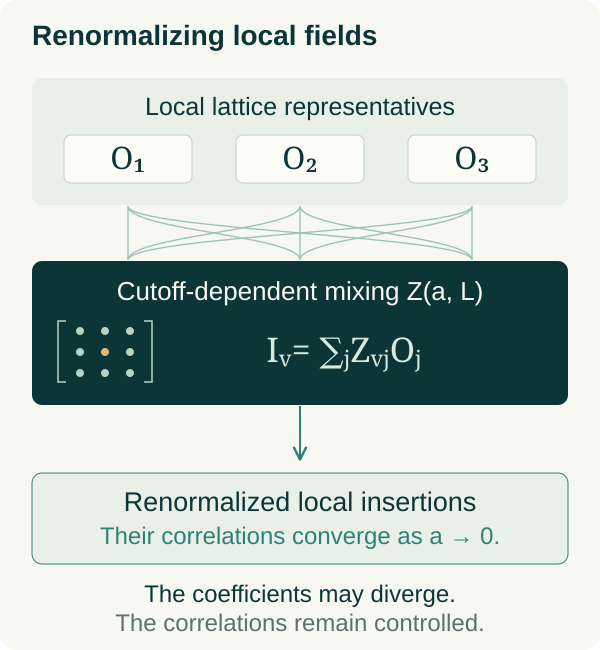
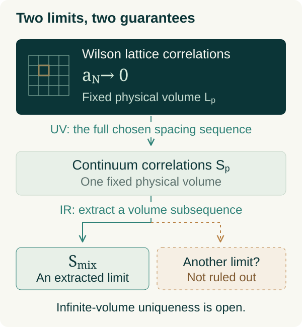
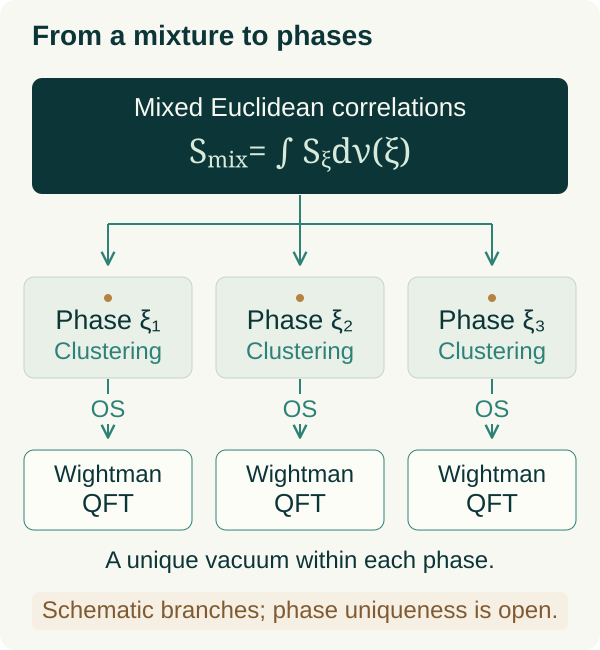

01 / THE PRECISE TARGET
Existence is a statement about a quantum theory.
The Clay problem asks, for every compact simple gauge group \(G\), for a nontrivial quantum Yang–Mills theory on four-dimensional spacetime with a strictly positive mass gap. The group quantifier matters: constructing one model for \(SU(2)\) would not settle the full statement. The required axiomatic properties must be at least as strong as the Wightman or Osterwalder–Schrader frameworks cited in the official formulation. “Existence” therefore includes physical structure, not merely a finite value assigned to a formal functional integral. [1, §4, p. 6]
Here \(\mathcal H\) is the physical Hilbert space, \(\Omega\) is the vacuum, \(U\) represents spacetime symmetries, and the \(\mathcal O_i\) are local, gauge-invariant operator-valued distributions. In the Lorentzian formulation, the representation has positive energy and its generators satisfy the spectrum condition. Local observables commute at spacelike separation. Their short-distance behavior must also identify the intended Yang–Mills theory; the official statement discusses gauge-invariant curvature polynomials, asymptotic freedom, and the subtleties of their renormalization. [1, §§3–4, pp. 5–6]
The Euclidean construction studied below is a route to that Lorentzian theory. Its \(\mathbb R^4\) has Euclidean signature; reconstruction supplies real-time dynamics. These signatures should not be silently interchanged in an argument.
Positive energy alone allows spectrum accumulating at zero. A gap excludes that accumulation in the physical vacuum representation. The nontriviality requirement also rules out satisfying the display with a Hilbert space containing only the vacuum. The actual spectral threshold must be finite. Confinement is a related dynamical question, but it is listed separately among extensions of the Millennium problem. [1, §§4–5, pp. 6–7]
The target is pure Yang–Mills: no dynamical quarks or Higgs field are introduced to generate a mass. The gap belongs to the spectrum of physical states created by gauge-invariant observables. A mass parameter inferred from a gauge-dependent gluon propagator is consequently not, by itself, the requested spectral statement. Nor does the definition demand an isolated one-particle eigenvalue at the threshold. The official discussion lists such a stronger spectral property separately. A proposed construction must make clear which of these logically different assertions it establishes.
02 / FIX THE CONVENTIONS
One connection, with the coupling in the action.
We work at \(\theta=0\). For explicit coefficients, specialize to \(SU(N)\) and use Hermitian generators in the fundamental representation. Repeated spacetime and colour indices are summed unless a restriction is displayed.
We absorb the coupling into the connection variable. Thus the covariant derivative contains \(A\), while an overall factor in the action carries \(g\). Expanding the commutator of two covariant derivatives fixes every sign:
In differential-form notation this becomes the following expression. The factor of one half belongs to the graded-commutator notation; dropping it would double the nonlinear term.
For a gauge transformation \(h(x)\), covariance of \(D_\mu\psi\) determines the inhomogeneous transformation of the connection. Curvature transforms by conjugation, so traces of its products are gauge invariant.
With these choices, the positive Euclidean action has equivalent matrix and component forms. The distinction between summing all ordered index pairs and only \(\mu<\nu\) explains the factor of two:
For general compact simple \(G\), a positive \(\operatorname{Ad}\)-invariant inner product replaces the chosen matrix trace. Its normalization is part of the coupling convention. Taking that inner product to be \(2\operatorname{tr}(XY)\) in the present Hermitian realization recovers the preceding action. This is the invariant content behind superficially different normalizations. [1, §1, pp. 1–2]
In natural units, the engineering dimensions make four dimensions special: the coupling is dimensionless. Composite operators subsequently acquire scale-dependent renormalizations, so engineering dimensions alone do not determine their quantum correlations.
The action also fixes the classical equation. For compactly supported variations, integration by parts and invariance of the trace give the following expression, with the derivative acting in the adjoint representation on curvature:
This variation concerns smooth classical fields. Solving the resulting nonlinear partial differential equation is not the same problem as constructing its quantum theory: the latter requires control of all fluctuations and renormalized observables. The distinction persists even if particular classical solutions are known exactly.
03 / A FINITE, EXACT STARTING POINT
The Wilson measure and its classical normalization.
Take a periodic box of side \(R\), with \(R/a\) an integer. A link matrix transports a colour vector from its terminal site back to its initial site. This orientation fixes its small-spacing sign consistently with our covariant derivative.
Gauge transformations act independently at lattice sites. Opposite orientations use inverse matrices. The closed product around a plaquette therefore transforms only at its basepoint:
The Wilson action sums each elementary square once. Its gauge invariance follows directly from conjugation invariance of the trace; no gauge-fixing term is required to define this finite integral. [2]
Normalized Haar measure supplies one integration per independent link. Its left and right invariance preserves gauge symmetry in the measure as well as in the action.
Every plaquette term lies between zero and two. If \(N_p\) is the finite number of plaquettes, compactness gives a simple existence estimate:
This estimate deteriorates with the number of plaquettes. It establishes finite-lattice existence, not the uniform estimates needed for a continuum theory.
Dividing by the partition function removes an overall normalization, including field-independent contributions to the action. It does not make the limiting observables automatically finite. Numerator and denominator can each contain substantial regulator dependence, while composite insertions need their own renormalization. Conversely, a vanishing unnormalized partition function along a sequence of regulators would not alone prove the failure of normalized expectations. The relevant issue is control of the ratios and the resulting hierarchy, not the numerical size of the partition function considered in isolation.
To check the normalization, evaluate links on a fixed smooth classical connection. Expanding the holonomy and using traceless curvature yields
Multiplication by \(2N/g_0^2\), followed by the Riemann-sum limit, reproduces the continuum coefficient:
This is a classical consistency calculation at fixed coupling and controlled smooth background. Typical quantum fields need not be smooth, and the quantum continuum limit requires coupling renormalization. The expansion cannot justify exchanging a limit with the full path integral. [1, §6.5, pp. 11–12]
04 / WHAT MUST ACTUALLY CONVERGE
Renormalized observables, tested as distributions.
A continuum construction should identify local gauge-invariant observables, such as curvature composites, rather than demand pointwise convergence of a gauge potential. Composite operators generally mix with other local operators allowed by the symmetries, including the identity where appropriate. Schematically, after fixing a renormalization prescription and scale \(\mu\),
The coefficients may contain dimensional powers of the cutoff as well as logarithms. Products at coincident points require additional contact prescriptions. Accordingly, the appropriate convergence language is that of distributions. For a smooth compactly supported test function, the lattice approximation to a smeared field is
Test functions have fixed physical support as the regulators change. This prevents an apparent convergence obtained merely by shrinking every observable to an irrelevant scale. The desired hierarchy contains all suitable products of these smeared observables, with compatible prescriptions:
A proposed theorem must specify a limiting procedure. One possible target is a continuum limit at fixed volume, followed by an infinite-volume limit; another uses an explicitly controlled joint sequence. Neither order is automatic, and interchanging them requires a separate argument.
The displayed limit is a construction target, not a theorem being asserted here. Useful estimates would bound distributions by test-function seminorms uniformly in the regulators, in a stated range of parameters. For example, a bound of the schematic form
can provide compactness or continuity information when its constants and topology are specified. It does not by itself prove convergence, nontriviality, or the required short-distance behavior. Convergence away from coincident points likewise leaves the distributional extensions unresolved. The official problem explicitly warns that weak existence alone is insufficient without establishing the physical properties of the limit. [1, §4 and §6.5, including p. 12, footnote 2]
There are two further distinctions to keep visible. First, the existence of a convergent subsequence does not establish independence of the chosen regulator sequence or renormalization conditions; the construction must state the sense in which its continuum object is identified. Second, finite bounds at each correlation order do not specify how their constants grow with that order. A reconstruction theorem may require quantitative growth control across the entire hierarchy. These are separate analytic obligations, rather than consequences of writing a formal generating functional.
05 / FROM EUCLIDEAN DATA TO STATES
Reflection positivity builds the physical inner product.
Let \(\mathfrak A_+\) be an algebra of suitable gauge-invariant Euclidean observables supported at strictly positive times. Write \(\mathcal S\) for their Schwinger functional; this notation does not assume a continuum measure on ordinary smooth connections. For scalar observables, time reflection and complex conjugation define an antilinear operation. Tensor observables require the corresponding reflected index transformation.
Reflection positivity is positivity of a particular sesquilinear form, not ordinary positivity of a probability density. It must hold for every finite collection of allowed positive-time observables:
The finite-dimensional positivity condition implies a Cauchy–Schwarz inequality. In particular, an observable with zero norm has zero inner product with every other allowed observable. This is why quotienting out null vectors is mathematically consistent, rather than an arbitrary removal of inconvenient states:
The reconstructed norm is determined by correlations across the reflection plane. It is generally different from an ordinary Euclidean square-integrability norm on field configurations.
The null vectors must be removed before completing the space. The constant observable represents the vacuum:
Under the remaining reconstruction hypotheses, positive Euclidean time translations descend to a strongly continuous self-adjoint contraction semigroup. Its generator is the physical Hamiltonian:
Reflection positivity alone is insufficient. Reconstruction also needs the applicable Euclidean covariance, permutation symmetry, and regularity or growth conditions; clustering is associated with the unique-vacuum requirement. The precise hypotheses depend on the field framework. The 1975 Osterwalder–Schrader paper corrects and extends the 1973 treatment, so both are relevant. [3]
Wilson lattice regularization has reflection positivity in the appropriate lattice formulation. Passing it to a limit requires convergence of the very reflected products defining this form; arbitrary approximations or composite-field prescriptions cannot be assumed to preserve it. Restoring continuous Euclidean symmetries and controlling growth remain additional obligations. [1, §6.5, p. 11]
Even successful reconstruction yields only a nonnegative Hamiltonian. It supplies the setting in which the separate mass-gap question becomes precise; it does not supply a positive lower bound above the vacuum.
06 / RUNNING COUPLING AND PHYSICAL SCALE
Asymptotic freedom does not determine the infrared spectrum
Use the convention \(\beta(g)=\mu\,dg/d\mu\), with no matter fields and \(f^{acd}f^{bcd}=C_A\delta^{ab}\). For \(SU(N)\), \(C_A=N\). The first two coefficients are universal under analytic changes between mass-independent coupling schemes with the same leading normalization. They describe a weak-coupling expansion; neither coefficient is a nonperturbative spectral estimate. The original asymptotic-freedom papers and the PDG review give the relevant conventions. [6] [7] [8]
At one loop, differentiating the inverse squared coupling makes the equation linear. Integrating between two high-energy scales gives logarithmic weakening, provided both couplings remain in the perturbative regime:
Integrating the reciprocal beta function at small coupling yields the conventional scheme-dependent scale \(\Lambda_{\mathsf s}\). The power prefactor is the two-loop correction to the essential exponential; higher orders enter the indicated factor.
The prefactor follows by expanding the reciprocal beta function, rather than assuming that the one-loop solution remains exact. The logarithm in its integral produces the power of the coupling. This calculation is local to the ultraviolet regime: integrating a truncated beta function into strong coupling does not control the omitted terms there.
The normalization of this integration constant is a convention, not an observable. For example, the following analytic redefinition leaves \(b_0,b_1\) unchanged but rescales \(\Lambda\). A comparison between a lattice coupling and \(\overline{\mathrm{MS}}\) therefore requires matching.
For a continuum pure theory at fixed theta angle, dimensional analysis permits masses and string tensions to be expressed in units of this scale. It supplies neither their existence nor the positivity of their dimensionless coefficients. In particular, the perturbative formula becoming unreliable near \(\Lambda\) is not a derivation of confinement or a mass gap.
Finally, distinguish physical and lattice units. In a massive correlation channel, retaining a finite physical correlation length while removing the cutoff requires its length in lattice sites to diverge. The vanishing of the dimensionless lattice mass is therefore compatible with a positive continuum mass:
07 / CONSTRUCTIVE RENORMALIZATION
What a multiscale construction must control
Wilson regularization makes the finite-lattice theory an integral over compact-group variables. Bałaban’s program organizes that integral into successive scales, using averaging maps compatible with gauge transformations and gauges adapted to local geometry. This is substantially more structure than replacing neighboring matrices by their arithmetic average. A schematic normalized blocking kernel gives the exact marginalization identity below; it is an explanatory model, not a transcription of Bałaban’s particular transformation. [2] [4]
With invariant integration measures, covariance of the kernel transfers gauge invariance to the coarse density. The coarse gauge transformation \(\bar h\) must be defined consistently with the fine transformation \(h\); arbitrary independent transformations of the two arguments are not intended.
After blocking, the action does not stay inside a one-parameter Wilson family. An exact description generates all symmetry-allowed interactions, including extended loops. One can organize local operators and the remaining contributions on connected collections of blocks, called polymers. With overlaps assigned consistently, a schematic organization is
The operator sum is generally infinite. Discarding it produces an approximation unless a theorem bounds the discarded terms. In a convergent polymer analysis, decay in polymer size must compensate for the growing number of possible polymers. A representative type of weighted estimate is shown here; its norm, domain, and scale dependence must be specified in an actual proof.
Small-field regions permit expansions around controlled background configurations. Large-field regions need separate bounds from the action's suppression, together with control of boundaries and combinatorics. Small bare coupling does not make every configuration small. Bałaban’s 1987 analysis constructs localized effective actions and recursive coupling renormalization in the small-field region; the later large-field papers extend the effective-density analysis. [4]
Gauge fixing here is an analytical device, not a physical observable. A construction must show that gauge choices do not change the gauge-invariant quantities eventually reconstructed. Similarly, an exponential decay bound for a single-scale fluctuation covariance is not the mass-gap estimate: after all scales are combined, arbitrarily long-wavelength physical modes may still contribute. The constants and their dependence on scale must remain visible throughout this comparison.
08 / SPECTRAL THEORY AND CORRELATIONS
A uniform statement about the physical Hilbert space
Assume reconstruction has produced a nonnegative self-adjoint Hamiltonian \(H\) and a unique normalized vacuum \(\Omega\). Write \(P_0=|\Omega\rangle\langle\Omega|\) and \(Q=1-P_0\). The gap is a spectral exclusion, equivalently a quadratic-form inequality on the form domain. It need not correspond to an isolated one-particle eigenstate. [1]
Functional calculus turns spectral support into a contraction estimate, valid at every positive Euclidean time. Conversely, the operator-norm estimate excludes spectrum below \(\Delta\) on the vacuum-orthogonal subspace:
Use a properly smeared physical observable \(A\), with \(A\Omega\) in the Hilbert space, and remove its vacuum expectation. Point fields are distributions and cannot be substituted without domain control. The spectral theorem supplies a positive finite measure for the resulting state:
The converse requires enough states. Suppose a linear dense set in \(Q\mathcal H\) obeys exponential bounds with one common rate \(\Delta\); the finite prefactor may depend on the state. Positivity, rather than cancellation, then forces each spectral measure to vanish below that rate:
For every \(0<\epsilon<\Delta\), the associated spectral projection annihilates a dense set and hence vanishes. A single glueball correlator only tests states to which its operator couples. Different positive rates in different channels, with infimum zero, also fail to prove a global gap. Finite-time numerical fits do not supply the all-time inequality.
The logarithmic slope makes the channel limitation explicit. For a nonzero state and positive time, exponentially weighted spectral moments exist, so the effective mass is a mean energy with a time-dependent positive weight. Its derivative is minus the corresponding variance. It approaches the bottom of this state's spectral support, which may sit above the bottom of the full physical spectrum.
A continuum threshold can therefore produce an exponential multiplied by a power of time; an isolated pole is unnecessary for a positive spectral lower bound. Positivity is crucial to these deductions. A general cross-correlator can exhibit cancellations, whereas the autocorrelation above is the Laplace transform of a positive measure.
A positive, injective, self-adjoint lattice transfer operator gives the analogous relation at a cutoff. On its physical Hilbert space, normalize by its largest eigenvalue \(\lambda_0\); for a nonzero excited eigenvalue \(\lambda_n\),
The ratio is dimensionless; division by the temporal spacing restores energy units. Merely showing \(\lambda_1<\lambda_0\) at each finite cutoff and box does not prevent the gap from collapsing:
Here \(m_1(a,R)\) is the smallest positive excitation energy and \(R\) is the physical spatial box size; transfer-matrix evolution runs in Euclidean time. Even a uniform lower bound must be transferred to the reconstructed limit using proved convergence of states or correlation functions. Both cutoff removal and growth of the box must respect the chosen physical normalization.
09 / STATIC SOURCES AND LONG-DISTANCE DYNAMICS
Area laws ask a different spectral question
A Wilson loop probes parallel transport around a closed curve in a specified representation \(\mathcal R\). Retaining this page's Hermitian connection and \(D=d-iA\), parallel transport includes a factor of \(i\). Its continuum renormalization must handle perimeter and, for nonsmooth loops, cusp divergences.
For a rectangle of spatial length \(r\) and Euclidean duration \(T\), transfer-matrix evolution involves a sector containing two external static sources. At a reflection-positive cutoff, the positive spectral weights project onto the lowest source-sector energy when the trial state overlaps it. Subtracting the static self-energies defines a renormalized potential. [2] [5]
An asymptotic area law, with sufficiently controlled limits and subleading perimeter terms, gives a linearly rising potential. Its coefficient has dimensions of mass squared:
The vacuum mass gap concerns gauge-invariant excitations without these external sources. It does not automatically give a string tension. In pure \(SU(N)\), gluons can completely screen sources with zero center charge, also called zero N-ality. Sources with nonzero center charge cannot be completely screened by gluons alone. [5]
Dynamical fundamental matter can break the string. Moreover, the Clay problem includes simple groups with trivial center: in \(G_2\), gluons can screen fundamental sources, so their asymptotic string can break even in the pure theory. An area law for every representation cannot be made part of the universal mass-gap requirement. [5] Holland et al., exceptional confinement ↗
10 / READING AN EXISTENCE PROOF
Identify the theorem before auditing the estimates
An existence proof should be assessed through its exact theorem statements and dependencies. The November 10 assessment connects the released construction to Wilson regularization and Bałaban’s methods, and explicitly leaves the mass gap and uniqueness of the infinite-volume limit unresolved. The checklist here explains the logical distinctions; Part II applies them to the released sources. Assessment, pp. 1, 6–7 ↗
Specify the limit. Record the gauge group, boundary conditions, coupling trajectory, theta angle, observable algebra, and topology of convergence. Local composite fields can mix and need counterterms; convergence of the partition function alone does not settle their correlations. A representative target is convergence of suitably renormalized smeared Schwinger functions:
The limit notation abbreviates a stated joint or iterated procedure, not permission to interchange limits. At finite spacetime volume, tests can first have compact support away from the boundary; extension to Schwartz tests then needs estimates on growth and tails. If only subsequential convergence is proved, identify whether the claimed properties hold for every selected limit and whether uniqueness is actually needed for the stated result.
Check reconstruction. Prove the required covariance, symmetry, positivity, clustering, and growth estimates for the full hierarchy. Reflection positivity must hold for all admissible finite combinations of positive-time observables, not just one two-point function:
Here \(\Theta\) includes complex conjugation and Euclidean time reflection. The corrected Osterwalder–Schrader reconstruction theorem needs an appropriate growth condition; merely listing the original 1973 axioms with ordinary temperedness overlooks the correction in the 1975 paper. [3]
Identify Yang–Mills. A nonzero Hilbert space is insufficient: verify the local observable correspondence and short-distance behavior required by the official problem. Check which gauge groups the theorem covers, how continuum symmetries emerge, and what is actually established about uniqueness and nontriviality. [1]
Audit formal dependencies. Inspect imported axioms, theorem assumptions, placeholders, and the connection between formal definitions and physical quantities. A machine-checked implication retains its hypotheses. Establishing existence would still leave a separate, quantitative demand on the resulting Hamiltonian:
No uniform lower bound over different groups is required. Within each theory, however, the bound must survive the continuum and infinite-volume limits in physical units. That is the additional statement a complete Millennium solution must establish.
11 / THE THEOREM AND ITS QUANTIFIERS
Read the quantifiers before the proof.
The release constructs a family of Wilson lattice theories, removes the ultraviolet cutoff at fixed physical volume, extracts an infinite-volume limit, and reconstructs relativistic quantum fields from its clustering components. The committee’s assessment treats this as an existence construction. It explicitly does not identify a positive spectral gap or a unique infinite-volume theory. The following is a technical reading of the assessment and selected definitions and theorem statements. Assessment, pp. 1–3 ↗
The concrete input is a closed matrix subgroup \(G\subset U(m)\) with nonabelian simple real Lie algebra \(\mathfrak g\), together with a positive parameter \(b\) in the blocking kernel. This is the submission’s matrix realization of the compact simple gauge-group setting. The penalty \(b\) is fixed before the family is chosen; it is not a physical gluon mass. Let \(C\) denote the resulting family, including its cutoff schedule, local lattice representatives, and renormalization data. A useful compressed reading of the committee’s CombinedAcceptance statement is
Here \(p\) is a requested extraction order, \(q\) is its refinement, \(S\) is a continuum correlation hierarchy, and \(F\) contains the fields, phase construction, stress tensor, and relativistic reconstruction associated with that hierarchy. The lattice clause replaces the ultraviolet extraction by the full chosen ultraviolet sequence while retaining a refined volume sequence. These choices are coordinated: the same family and the same reconstructed object serve all the clauses. Acceptance specification ↗ · Combined theorem ↗
The last line matters. A short public theorem can conceal connections between its abstract labels and the actual Wilson observables. The stronger construction retains C.Makes, which links the local representatives to classical curvature data, and Spec.Final, which carries the selected reconstruction. The combined acceptance theorem preserves these connections while adding independently formulated checks. It does not turn every retained source clause into an independent semantic verification. Throughout this account, “the source proves” and “the committee separately checks” are distinguished where their scopes differ. Joint source construction ↗
12 / THE STARTING WILSON LAW
A Wilson law with fixed conventions.
Convention switch. Part I used Hermitian matrices. The released submission uses an anti-Hermitian connection: \(A^{\mathrm{ah}}=-iA^{\mathrm{h}}\). We follow its convention in Part II, and do not transfer numerical coupling normalizations between the two parts without converting the trace normalization. The curvature and invariant inner product used in the assessment are
At cutoff \((N,p)\), the physical torus has side length \(L_p\) and spacing \(a_N\). A link variable \(U_e\in G\) is assigned to each positively oriented edge, with \(U_{-e}=U_e^{-1}\). The plaquette holonomy \(U_\square\) is the ordered product around its boundary. Compactness of \(G\) and normalized Haar measure give an ordinary finite-dimensional probability law:
Each positively oriented plaquette is counted once. Expanding a smooth-link plaquette explains the classical normalization, although the proof uses the exact lattice law rather than this expansion as a replacement for it. In these conventions the cutoff coupling satisfies \(\beta=1/g_0^2\), with formal continuum action
This \(\beta\) differs from frequently used lattice conventions such as \(2N/g^2\). In the committee’s bridge to an independently formalized lattice-gauge library, the parameter passed to that library is \(\beta_{\mathrm{LGT}}=\beta_{\mathrm{submission}}/m\). The bridge proves equality of the finite probability laws under the configuration identification, and the combined theorem ties the same law to the subsequent moments. Such a normalization check is essential: merely naming a measure “Wilson” would not establish that connection. Assessment, pp. 4–5 ↗ · Finite-law bridge ↗
The continuum output is a hierarchy of correlations and its reconstructed local quantum fields. The submission does not assert that it has constructed a probability measure \(e^{-S_E[A]}DA\) on a space of continuum gauge potentials. That distinction avoids assigning a literal measure-theoretic meaning to an undefined \(DA\). The precise relationship to Yang–Mills comes through the starting lattice law, the field dictionary, and the quantitative continuum properties described below.
13 / EXACT RENORMALIZATION GROUP
Exact blocking and a bounded RG trajectory.
The stability statement concerns a sequence of represented densities, with quantitative bounds on their local coefficients. It has three ingredients: an exact integral identity, analytic estimates on the output activities, and numerical choices making those estimates fit the next scale's bounds. The last ingredient does not replace the analytic estimates. The construction also retains the history of admissible Wilson descendants; it does not claim that every density satisfying a few norm bounds admits the required next step.
1. Exact blocking retains the large fields
Writing \(m+1\) for the finer scale and absorbing the chosen coupling into the blocking kernel,
All Haar measures here are probability measures. Once absolute integrability is proved, Fubini and the second identity give \(\int\rho_m=\int\rho_{m+1}\). Iteration therefore preserves the original partition integral exactly. Suppressing the extensive indexing, the representation is
The canonical action contains the actual inverse coupling, with fixed kinetic normalization. The regular term \(E_m\) is a sum of masked local activities; \(\mathcal G_m\) is a gas of forced activities, not the gauge group. Let \(\mathfrak F_t(U)\) be the set of sites touching a plaquette whose group chord exceeds threshold \(t\). A support \(X\) is healthy if \(X\cap\mathfrak F_t(U)=\varnothing\). In this notation the activity formula reads
Admissibility means that the forced supports are disjoint and their marked inventories cover exactly the flagged sites. Each nonzero forced coefficient must obey its eligibility test. Thus bad-field regions are accounted for, not discarded. If there are no flagged sites, only the empty family contributes and \(\mathcal G_m(U)=1\). The regular representatives vanish at the flat configuration and have zero Hessian on the specified affine directions on nonwrapping supports. This separates the regular remainder from the canonical quadratic term. Activity representation and admissibility ↗
2. The bounds carry derivatives and support size
At a fixed scale let \(r\) be the derivative order, \(q\) the growth power, \(\sigma>0\) the support exponent and \(B\) the cover size. For a regular activity anchored at \(o_i\), a majorant \(b_i\) bounds every ordered left-link derivative of order at most \(r\) on healthy configurations. The tested directions satisfy
These are bounds on actual unmasked representatives and their derivatives; differentiating a discontinuous indicator is not being assumed. Let \(c_B(X)\) denote the source's support cover number. Define the support weight \(w_\sigma(X)=e^{\sigma c_B(X)}\). The regular and forced budget conditions are
The source includes nonnegativity and absolute summability in these conditions. The distinction matters: regular terms are charged at their anchor; forced terms are charged at every support site. Increasing support incurs an exponential penalty. Locality also includes the neighboring plaquettes inspected when a flag is tested, so an apparent short support cannot hide additional physical reads. Derivative and support weights ↗ · Exact budget definitions ↗
These bounds already explain why the represented sums make sense. Since \(w_\sigma\ge1\) and every forced support is nonempty, summing over the finite lattice gives \(\sum_i b_i\le|\Lambda_m|\delta_m\) and \(\sum_i k_i\le|\Lambda_m|\omega_m\). Dropping the compatibility restriction supplies a positive majorant:
The infinite-product identity follows from the finite identities and monotone convergence; \(\log(1+k_i)\le k_i\) gives the last bound. Along with the canonical-action bounds, this produces a measurable bounded envelope and hence integrability at each finite lattice. This envelope can grow with volume; it is not the later volume-uniform correlation estimate. Absolute summability proof ↗ · Density envelopes and exact partition transfer ↗
3. Why a step fits the next bounds
The numerical scale profile uses the hatted inverse coupling \(x=\widehat\beta_m\), distinct from the actual trial coupling. Write
For a fixed stage transition, let \(L\) be the block ratio, \(y=x+c_G\log L\), and \(g=\beta^{-1/2}\) for the actual incoming coupling. It stays in a prescribed band comparable to \(y\). The stage chooses constants \(C,H,D,\eta,\theta\), with \(H\ge1\) and \(\eta>0\), before delaying the entrance coupling. Define the following condensed version of the source's numerical prices:
The analytic output estimates, in the same weighted activity bounds just defined, have the price structure
The norm notation abbreviates the existence of the corresponding majorants, rather than introducing a new unproved Banach norm. The displayed inequalities are the output obligations consumed by numerical closure. Their analytic producer constructs a common activity family throughout each trial-coupling interval; the reset argument then attaches its estimates to the returned density. This requires local integration and connected-activity bounds. Merely choosing a schedule would not prove the inequalities. Exact one-step prices ↗ · Output price obligations ↗ · Construction and bounds of the activity family ↗ · Actual reset output and its estimates ↗
The closure mechanism can now be seen explicitly. Choose \(L\) large enough relative to the pre-block constant \(C\), making \(C^2/L\) small. At a fixed transition, \(P(x)=x^{o(1)}\), \(B(x)=x^{o(1)}\), and \(y=x+\text{constant}\). Thus the cubic terms, relative to the allowed regular error, obey
The two exponential remainder terms dominate their polynomial prefactors as the entrance coupling grows. Also \(\delta(y)/\delta(x)\to1\). These facts leave strict room below \(\delta(x)\). For the forced contribution, the enlarged input band gives \(g\le2\widehat g(y)\), hence \(t(y)/g\ge P(y)/2\). Absorbing the fixed prefactor at a sufficiently late entrance yields
where the schedule supplies a suitable positive \(\gamma\). The intermediate strong forced bound is retained for later calls, not weakened immediately to \(\omega(x)\). The source's recloses proves these implications from the paid numerical gates; reload applies them to the actual returned activities and preserves the certified history. Canonical path bounds, locality and continuity along trial-coupling intervals are additional induction data. The same-stage transitions must work repeatedly without silently spending derivative order at every step. Numerical closure ↗ · Closure on represented descendants ↗
4. Inside one local RG integration
The numerical prices above compress a substantial analytic argument. This section opens that argument: how the Gaussian is chosen, how rough factors are held fixed under differentiation, how overlapping contributions are summed, and which cancellations make the regular remainder small enough to iterate.
Comparison with Armstrong’s draft. Scott Armstrong’s informalization project organizes the local integration in §11 and the activity estimates in §13. We use that organization to explain the construction, while linking the estimates to the released source at a fixed revision. The manuscript is a developing reconstruction from the code, not the original OpenAI prose submission. Its explanatory power counting and the exact implementation estimates are distinguished below. Manuscript, revision and status [11].
- Stationary field, covariance and exact normalization
- Held-link derivatives and joint Gaussian moments
- Connected sums and large-field suppression
- Parity, matching and the final local remainder
The stationary field: remove gauge zero modes before inverting
Fix one RG step, its stage and blocking ratio \(L\). A gauge-invariant action has flat directions, so its unrestricted Hessian is not the matrix to invert. On a block tree, fix the tree links and use the remaining link logarithms \(z\) as coordinates. Let \(v\) describe the prescribed coarse field, and let \(S(v,z)\) be the fine leading action plus the blocking penalty. The stationary interpolation solves \(D_zS(v,z(v))=0\) near the flat configuration.
The coercivity argument has geometric content. Interchanging two consecutive steps of a lattice route contributes one signed plaquette curl. Comparing a free edge with its tree route and the averaged coarse connector therefore controls that edge by nearby curls and the block average \(\mathcal B a\). Squaring, summing and counting how many fixed-size patches meet each plaquette gives constants independent of the period. Combined with positivity of the curvature quadratic form and the block penalty, this yields
The last equality follows by differentiating the stationary equation. Analyticity and the positive vertical Hessian give a local analytic branch by the implicit-function theorem. A volume-independent coercivity constant does not by itself give a volume-independent implicit-function neighborhood. The manuscript explicitly separates these claims. The formal construction records the branch and gap separately as Critical and PriceGap; subsequent estimates supply the locality needed for iteration. Informal derivation: stationary interpolation ↗ · Actual action, branch and gap definitions ↗
The sector Gaussian uses a local approximation to the inverse
The integral with large-field sectors needs another, precisely specified quadratic form. Hold the sector, forest, tags and frozen links \(Y\) fixed. Linearize the retained fine and mismatch square rows, with their actual stencils and masks, about the copied coarse field. Their affine map is \(a\mapsto\mathsf D a+s_Y\). Set \(Q_Y(a)=\tfrac12\|\mathsf D a+s_Y\|^2\), \(\mathsf A=\mathsf D^T\mathsf D\), and \(\mathsf b_Y=\mathsf D^Ts_Y\). This retained-row Gram is distinct from the full stationary Hessian \(\mathsf Q(v)\).
For each active coordinate \(i\), use a prescribed window \(\Omega_i\) around its projected edge endpoints. The sector windows contain a coarse ball of radius \(B/60\); they are chosen geometrically, including every dependency, rather than by testing which coefficients happen to vanish. Invert each principal compression and extend its selected column by zero:
The Schur norm is the maximum of absolute row and column sums. The constants are uniform in the period at fixed stage and ratio, once the coupling threshold and geometric conditions hold and the stored coarse flags match the field. Gap.not_flat derives the positive Gram bound from the tree and predictor estimates; it does not assume an inverse estimate. Exponential row bounds then survive a small exponential conjugation of the matrix, giving decay of the inverse. A compressed inverse column solves the matrix equation inside its window. Its residual crosses the window boundary, gaining the exponential factor in \(B\). For sufficiently large \(B\), the small error also preserves positivity of \(\Gamma\).
Thus the Gaussian has finite range by construction while approximating the full inverse. Derivative estimates keep the chosen masks and windows fixed and retain the small factor in the inverse, stationarity and precision errors. These are estimates for one RG scale, not a physical mass gap. Selected covariance and opaqueCost ↗ · Errors with derivatives ↗
An exact Gaussian change, with its correction terms retained
Put \(g=\beta^{-1/2}\), using the actual coupling of the input density. Substitute \(a=m_Y+gz\), with \(z\) distributed according to the centered probability Gaussian \(\gamma_\Gamma\). Because \(\Gamma\) and \(m_Y\) are local approximations, completing the square leaves both a linear and a quadratic correction. For \(n_a\) real active coordinates and an integrable multiplier \(W\), the conditional identity is
Expanding \(Q_Y(m_Y+gz)\) verifies every sign and factor: the Gaussian density cancels the added \(\tfrac12z^T\Gamma^{-1}z\). In the actual sector identity, \(W\) retains the chart density, allocation indicators, tag likelihoods, inherited interactions and nonlinear residual. Frozen links still carry product Haar measure. The normalization also retains the Haar-chart scale and original blocking prefactor. Only active coordinates contribute to \(n_a\); artificial identity completions used in matrix estimates do not add integration variables. Integrability and the exact guarded identity are part of authorized_change. Removing guards before proving estimates would change the assertion. Square-completion identity ↗ · Exact sector integration ↗
Why the determinant and Haar Jacobian must be paired
At the stationary configuration \(U_v\), the Gaussian factor has a different role: it identifies the quadratic correction to the coarse action. Let \(J_{\mathrm{ax}}\) be the normalized Haar density in axial coordinates and \(\mathcal L\) the inherited loop action. Its negative logarithm is \(\mathcal T(v)=\mathcal L(U_v)+\tfrac12\log\det\mathsf Q(v)-\log J_{\mathrm{ax}}(v)\).
Changing from axial increments to left increments at \(U_v\) gives a derivative matrix \(D s\). Stationarity removes the extra first-derivative term in the Hessian chain rule. Haar invariance supplies the matching Jacobian. If \(\mathcal I\) embeds the axial slice, \(\mathsf J\) is the joint left Hessian, and \(\mathcal R\) inserts gauge variations, the identities used are
Here \(\mathsf C_\mu=\mathsf J+F_\mu^TF_\mu\) is the completed Hessian and \(\mathsf G_\mu=F_\mu\mathcal R\) its gauge block. The tree-ordered change of basis has diagonal entries \(\pm1\), explaining its unit squared determinant. Positivity near the flat field licenses the logarithms. This is a proved local determinant identity, not an omission of the gauge directions. Separately, averaging the eligible frame and predictor choices preserves the lattice symmetries of the blocking law. Jacobian and determinant proof, treasury and tribute ↗ · Discrete-symmetry averaging
Local determinant estimates require further care. If a positive Gram and all its principal compressions have spectrum in \([\eta,K]\), diagonalizing a compression writes each diagonal entry of its matrix logarithm as a convex combination of logarithms of eigenvalues. Therefore
The local charges \(\ell_i\) use the same window compressions and sum the color components at each free edge. The source keeps \(\mathcal R_{\det}\) explicitly; local diagonal bounds do not turn a global determinant into an exact local sum. Its flat scalar and assigned quadratic coupling correction are separated before the remaining variation enters the activity estimates. Consequently this calculation supplies ingredients for the regular-remainder bound, rather than proving the full cubic price by Gaussian normalization alone. Local logarithm estimates and explicit residual ↗
Differentiate the common integral while holding rough fields fixed
An old forced activity can be merely measurable. Differentiating it as though it were a smooth function of the coarse field would invalidate the derivative estimate. The local calculus instead changes coordinates so that every physical link read by that activity is held fixed. In the source, Notice.stalls proves the held-link identity inside the protected chart; Shutter retains the cutoffs needed to use it. The whole selected product uses one local Gaussian marginal. Held physical links and protected derivatives ↗
Here is the finite-dimensional calculation behind that method. Fix the sector, auxiliary tags and frozen links \(Y\), the coupling \(g>0\), and a base coarse field \(V_0\). Suppress the fixed \(Y\) in \(m(V,Y)\). Write a protected fine link as \(U(V,z)=\exp(m(V)+gz)R(V)\), where \(R(V)\) is its coarse-field replica. Define \(z_V\) locally by \(U(V,z_V)=U(V_0,z)\). Restrict \(V\) to a neighborhood of \(V_0\) where the protected coordinate change has an invertible Jacobian. On the logarithm chart,
For a rough factor \(K\) whose complete set of link arguments is held this way, \(K(U(V,z_V))=K(U(V_0,z))\). Its derivative is therefore never requested. The parameter dependence moves into the smooth factors, the Gaussian density and the coordinate Jacobian. This is a local identity with retained chart protectors, not a global smoothness claim about branch or flag indicators.
Let \(q_V\) be the centered Gaussian density with covariance \(\Gamma(V)>0\) on the union of active coordinates read by the product, and \(J_V=D_z z_V\). Relative to the base law, the density multiplier is
This ratio compares Gaussian coordinate laws. The original Haar-coordinate density remains among the smooth factors; the source’s held-Haar formulation retains the reciprocal chart Jacobian explicitly. For one parameter direction, a dot denotes differentiation at fixed base coordinate \(z\). Using \(\partial\Gamma^{-1}=-\Gamma^{-1}(\partial\Gamma)\Gamma^{-1}\) and \(\partial\log\det\Gamma=\operatorname{tr}(\Gamma^{-1}\partial\Gamma)\),
Thus changing the covariance contributes genuine terms even when the old activity is fixed. Repeated differentiation produces polynomial Gaussian factors and derivatives of the protected coordinate map. Moving those derivatives under the integral still requires an integrable majorant. Armstrong's simultaneous local integration lemma organizes precisely this issue; it does not multiply separate expectations of overlapping factors. Draft §11, simultaneous local integration ↗ · One marginal for all selected reads ↗
Pay for overlapping factors with one Gaussian moment bound
The required exponential integrability can be understood by an exact square completion. Let \(z\sim N(0,\Gamma)\), let \(K\) be symmetric, and put \(L=\Gamma^{1/2}K\Gamma^{1/2}\), \(u=\Gamma^{1/2}\ell\). If \(I-L>0\), changing to a standard Gaussian and completing the square gives
The inequality follows eigenvalue by eigenvalue from \(-\log(1-\lambda)\le2\lambda\), and from \((I-L)^{-1}\le2I\). For several factors, use \(\ell=\sum_i\ell_i\) and \(K=\sum_iK_i\) before applying this identity. The cross terms \(\ell_i^T\Gamma\ell_j\) are part of the same expectation. Individual integrability would not by itself control their product.
Locality controls the accumulated cost. For nonnegative weights \(w_{ia}\) satisfying \(\sup_a\sum_iw_{ia}\le C_w\), with \(\ell_i(a)=0\) whenever \(w_{ia}=0\), weighted Cauchy–Schwarz gives
Zero-over-zero terms are defined as zero. The draft obtains such weights from decaying path coefficients and bounded address multiplicity. The quadratic terms require a bound on the sum of their weighted operators as well as a local allocation of \(\operatorname{tr}L\); a small operator norm alone would still allow a trace growing with the total volume. Gaussian polynomial moments then control each fixed derivative order, with the number of coordinate reads accounted for in the support bound.
Finally, let \(E_M\) be the simultaneous warning event for \(r\) distinct warning addresses in a selected product. If its probability is bounded by \(\varepsilon_w^{2r}\), then
This explains why the warning estimate is proved jointly, with coordinate multiplicities included: warning events may share Gaussian variables. The calculation above proves the integration implications; the construction-specific covariance, chart, path and simultaneous-warning estimates are the analytic inputs needed to apply them uniformly. Draft's common-majorant and warning argument ↗
From a local integral to connected activities
The activity bounds above require two different arguments: integration of products of local factors, followed by summation over their possible arrangements. Fix one stage, block ratio and derivative order, an admissible input representation, and a compatible allocation sector. The sector fixes the selected large-field tests, tree gauge and auxiliary tags. Constants may depend on these fixed stage parameters, but the estimates must be uniform in the physical period and over the permitted coupling interval. Armstrong’s draft separates these tasks in §§11 and 13. Draft §11, simultaneous local integration ↗ · Draft §13, local expansion ↗
After extracting the stationary quadratic contribution, write each remaining normalized smooth factor as \(1+W_a\). These factors include action remainders, Jacobian and determinant corrections, and inherited activities; an old forced activity enters directly as \(K_a\). Join factors whose complete read supports overlap. These supports include the Gaussian covariance windows, inspected flags and path data, not just the links visible in the final coefficient. A connected collection is a molecule \(M\). Its weight and differentiated majorant have the form
Here \(\nu\) is the common sector Gaussian/Haar law, \(g_M\) dominates the required derivatives of the transported product, \(s_M\) counts support blocks and retained path lengths, and \(P_j(x)=x^{o(1)}\) after the ratio is fixed. This is a simultaneous product estimate. Separate moment bounds cannot be multiplied when factors share Gaussian coordinates. Likewise, warning events are controlled jointly, followed by Cauchy–Schwarz; their probabilities are not assumed independent. Exact factorization is used only for disjoint complete read supports under the prescribed local covariance construction. Integrated product and derivative majorants ↗
Why the logarithm contains connected graphs
First consider the ordinary gas, away from the selected output flags. Its compatible selections have disjoint molecular supports. Expansion of finite products, followed by the established absolute bounds, gives the hard-core gas and its logarithm:
The graph vertices are occurrences: tuples may repeat an address, and an address conflicts with itself. The one-vertex coefficient is one. Connectedness is what makes the logarithm local: its coefficient depends on the union of a connected family of supports. But the displayed identity still needs convergence and a nonvanishing gas. The source proves the finite identity and then passes to countable alphabets under quantitative smallness; for real weights it also proves \(\Xi>0\), justifying the real logarithm. The actual logarithm identity and positivity ↗
The essential combinatorial saving comes before taking absolute values. Group connected graphs by a breadth-first spanning tree; alternating contributions within each group cancel. The resulting estimate is
Taking the absolute value of every graph separately would erase this cancellation and introduce far too much combinatorial growth. This tree bound is implemented by Graph.pay. The alternating-graph cancellation ↗
Paying for every possible attachment
Let \(c_B(Z)\) be the connected cover number already used in the activity norm, and let \(w_M\geq|z_M|\) include the required derivative costs. Reserve an extra support exponent \(\delta>0\), above the desired exponent \(a\geq0\). One sufficient condition used in the source is
A parent support covered by \(n\) radius-\(B\) balls has at most \(n(2B+1)^4\) sites where a child can attach. The site budget bounds the sum over children; the reserved exponential absorbs the dependence on the parent’s size and degree. The factorials account for ordered occurrences. Iterating this estimate along the spanning tree gives a geometric tail, uniformly in the torus size:
This proves a local weighted bound, not merely convergence at one finite volume. Fixed polynomials such as \((1+s_M)^d\) are absorbed by an additional, explicitly reserved support exponential. Smallness and rooted tree bounds ↗ · Cluster and support-weight tails ↗
Keeping the large-field penalty after summation
A forced component contains selected fine plaquettes, block mismatches or coarse flags. Its seed set \(A\) is nonempty. The local energy theorem must control signed correction rows as well as positive squares; counting only visibly positive terms is insufficient. With the ratio, mismatch threshold and stage bounds fixed before the coupling entrance, the energy and packet estimates give
The loss \(r_{\rm loss}=o(\beta t^2)\) collects the proved normalization, annular-error and local counting costs; it is not set to zero. With \(y=\widehat\beta_{m+1}\), \(t=y^{-1/2}P(y)\), \(P(y)=e^{(\log\log y)^2}\), and actual \(\beta\) in its prescribed band, \(\beta t^2\) is comparable to \(P(y)^2\). That dominates every fixed power of \(\log y\). The source’s packet estimate explicitly keeps the positive costs in the exponent before absorbing them. Packet energy after its local costs ↗
Ordinary clusters meeting a forced component must then be absorbed into that component’s coefficient. The restoration estimate marks every forced occurrence and proves that a positive part of its suppression survives the second connected sum. It bounds an upper majorant; the exact exclusion and inventory identities are supplied separately by the assembly. Consequently the strong output estimate remains of the form
The constants are chosen compatibly with the later actual-coupling estimate \(H e^{-\eta(t/g)^2}\), where \(g=\beta^{-1/2}\). Weakening immediately to the final allowance \(e^{-P(x)^{1/5}}\) would discard reserve needed by subsequent operations. Forced suppression through restoration ↗ · Conversion to the retained strong quote ↗
What this stage has not yet earned. Armstrong’s preliminary regular bound is only \(\widehat\beta^{-7/16}\), whereas the final allowance is \(\widehat\beta^{-11/10}\). Cluster convergence alone therefore does not close the RG induction. The additional inherited-term contraction, finite-period localization and flat-value/affine-Hessian subtractions are indispensable. In particular, a raw stationary remainder of size \(\beta g^3=g\) must not be identified with the final \(g^3\) remainder after those cancellations and normalizations.
Inside the local nonlinear estimate. The previous inequalities require estimates on actual integrals and their derivatives. The following argument isolates the centered local logarithm that remains after stationary integration and the canonical terms have been removed. Fix a stage transition and a derivative order \(q\ge5\); constants may depend on these choices. Write \(\mathfrak b=\widehat\beta_{m+1}\), \(\beta\asymp\mathfrak b\) for the actual coupling, and \(g=\beta^{-1/2}\).
Throughout, a derivative bound means the operator norm of an actual iterated Fréchet derivative. The source packages bounds of the form \(\|D^kf(x)\|\le A\lambda^k\), including \(k=0\). Choosing \(\lambda=u^{-1}\) is equivalent to controlling \(u^k\|D^kf\|\) on a chart of radius \(u\). This scaling matters: a small function value alone would not control the differentiated activities required by the next RG step.
Armstrong’s §13 explains the improvement using a cumulant expansion and extraction of low-order local terms. The implementation route followed here instead exposes exact parity of a normalized integral, Taylor bounds, and the matched classical and loop actions. These give a direct quantitative estimate without treating a truncated cumulant series as an equality. Compare the draft’s finite-period localization argument ↗
The raw cubic term costs \(g\), not \(g^3\)
Let \(\phi(x,y)\) be the classical action in a gauge-fixed local chart, with background \(x\) and stationary fluctuation coordinate \(y=\rho(x)\). Stationarity means \(D_y\phi(x,\rho(x))=0\). For the fluctuation \(y=\rho(x)+gz\), Taylor's formula gives the exact identity
A third-derivative bound \(\|D_y^3\phi\|\le C\) on the segment therefore yields \(|\mathcal V|\le Cg\|z\|^3/6\). The factor is \(\beta g^3=g\). Thus a raw cubic interaction cannot simply be identified with the final \(g^3\) term in a regular-error estimate. The proof must retain the quadratic normalization and exploit cancellations before claiming a smaller remainder. Stationary integral identity, funds ↗
Gaussian parity improves the normalized logarithm
The source retains a finite fluctuation ball \(\|z\|\le D\), includes the determinant correction, and expresses the integral against a fixed centered Gaussian. Denote it by \(Z_D(g,x)\). Its exponent is built from the exact Taylor integral above and the other smooth local action terms. Changing \((g,z)\) to \((-g,-z)\) leaves those expressions unchanged. The ball and Gaussian are also unchanged, so
Bounds through order \(q+2\) consequently give order \(g^2\) through every requested background derivative \(k\le q\). Positivity is essential before differentiating the logarithm: the construction proves \(e^{-1}/2\le Z_D\le e\). At \(g=0\), the determinant identity gives the probability of the same ball under the Gaussian with covariance \(M(x)^{-1}\). It is close to one, rather than exactly one.
Taking \(D\) proportional to the growing monitor and controlling the Gaussian tails makes this truncation error, including its requested derivatives, smaller than any prescribed inverse power. With all stage and support factors included, the result used below is
The proof compares the actual pushed density with this integral and separately bounds their logarithmic difference. These estimates hold on a protected chart neighborhood; uniform positivity, covariance bounds and domination of differentiated integrands are among their hypotheses. Exact parity and determinant identities ↗ · Logarithmic derivative estimate ↗ · Comparison with the actual density ↗
Subtract the matched classical and quadratic terms
The source organizes the remaining local logarithm by an exact identity. In shorter notation, let \(L=\log Z_D\), let \(R\) be the log-comparison error, let \(F\) be the discrepancy between the coarse classical action and the stationary fine action, and let \(W\) be the remaining loop/determinant discrepancy. Then
Here \(\mathscr H\) is the logarithm of the pushed pure density plus the prescribed coarse classical, quadratic-reset and loop actions. The constant \(\log\Omega\) disappears on subtracting \(\mathscr H(0)\). Classical matching gives \(D^kF(0)=0\) for \(0\le k\le4\). Discrete symmetry gives \(D\mathscr H(0)=0\), hence \(\|DW(0)\|\le\|DL(0)\|+\|DR(0)\|\). The quadratic loop matching controls \(D^2W(0)\) by an exponentially small finite-period error, rather than setting it to zero without a remainder.
The elementary estimate behind these statements is worth making explicit. For \(0<u\le1\) and integers \(1\le k\le q\), suppose derivatives of \(f\) from order \(k\) through \(q\) are bounded by \(C\) on the radius-\(u\) ball, and \(u^i\|D^if(0)\|\le b\) for \(i<k\). Repeatedly integrating derivatives along a segment gives
Indeed, \(\|D^if(x)-D^if(0)\|\le u\sup\|D^{i+1}f\|\) on the segment. Multiply by \(u^i\) and descend from order \(k\); each descent adds at most \(b\). Above order \(k\), use \(u^i\le u^k\). With \(k=5,b=0\), this bounds the classical discrepancy by \(C_Fu^5\). With \(k=3\), it bounds the centered quantum discrepancy using its controlled first and second derivatives. This is an estimate on all requested derivatives, not only on the value of the function. Exact decomposition and quartic matching ↗ · Taylor estimate, pools ↗
The two low-order facts have different origins. The zero gradient is proved for the complete local expression using signed lattice transformations and translations. The Hessian comparison comes from the separately constructed quadratic loop action on the same stationary background. In a finite auxiliary period it has an exponentially decaying mismatch. Keeping this mismatch avoids silently replacing a finite-volume identity by its infinite-volume limit. Gradient cancellation ↗ · Finite-period Hessian estimate ↗
The local estimate fits below the regular allowance
Write \(a\) for a derivative bound on \(L\), \(r\) for one on \(R\), and \(A_0\) for the finite-period Hessian error. Combining the preceding estimates gives the source's explicit bound
The auxiliary chart radius is \(u=\mathfrak b^{-7/16}\). At fixed stage, \(a=\mathfrak b^{-1+o(1)}\), \(r\le\mathfrak b^{-2}\), \(C_F,C_W=\mathfrak b^{o(1)}\), and the admitted auxiliary period makes \(A_0\le\mathfrak b^{-1+o(1)}\). In particular,
All terms therefore fit below \(\mathfrak b^{-23/20}\) after sufficiently late entry; the weakest displayed power leaves reserve \(19/16-23/20=3/80\) for subpower factors. The source proves this bound before converting chart derivatives to ordered link derivatives and localizing the auxiliary-period result. Those conversions retain explicit derivative and support costs. Finally, \(\mathfrak b^{-23/20}/\mathfrak b^{-11/10}=\mathfrak b^{-1/20}\to0\), leaving room beneath the regular allowance. This establishes the smallness needed for the pure local contribution, subject to the stated conversion and localization costs. Inherited activities and forced components still require their separate connected and support estimates. Combined remainder estimate, auster ↗ · Actual local bound, erudite ↗
This auxiliary \(\mathfrak b^{-23/20}\) estimate is sufficient for its allocated local allowance; it is not an identification with, or by itself a derivation of, the \(g^3\) term in the earlier numerical price. The latter belongs to the assembled output estimates and their additional extraction and support bounds.
For example, the chart-to-link conversion costs at most \(q!3^q\) times the chart bound under its stated chart-radius and direction-size conditions. Spatially growing directions and localization incur further support factors whose forms and exponents are fixed before the eventual coupling threshold is chosen. The final assembly retains the same local functions while proving their weighted budgets. It does not justify those budgets by discarding a large-field region or differentiating a sharp health indicator. Ordered link derivatives ↗ · Assembly into the regular activity bound ↗
5. Select a trajectory through the bands
The histories here are finite. More precisely, \(\beta_m\) abbreviates \(\beta_{N,p,m}\), with \(0\le m\le N\). Even at fixed \(m\), the selected value may depend on the terminal cutoff \(N\) and volume \(p\); consistency of one infinite trajectory across all cutoffs is not being assumed.
A valid output representation need not automatically have its coupling in the next admissible band. The construction varies the bare coupling along continuous families and restricts to surviving intervals. With \(s_m=\sum_{j<m}\log L_j\), the inner barriers are \(\bar\beta+\tfrac12c_Gs_m\) and \(\bar\beta+2c_Gs_m\). They lie inside the allowed band \([\widehat\beta_m/2,2\widehat\beta_m]\).
The exact transfer records
Write these barriers as \(\ell_m\) and \(u_m\). If \(d_{m+1}\le(c_G/4)\log L_m\), the step \(\beta_m=\beta_{m+1}-c_G\log L_m+e_m\), with \(|e_m|\le d_{m+1}\), gives
Continuity and the intermediate value theorem select a closed subinterval covering the full next barrier interval and staying between its endpoints. Restricting to this subinterval preserves the certificates at all already-constructed scales. Induction down from the cutoff therefore produces a trajectory reaching \(\beta_0=\bar\beta\), with every intermediate representation valid and banded. This is the shooting argument; it does not assert uniqueness of the selected bare coupling. Barrier and interval-selection proof ↗
6. The accumulated drift is subleading
The stage index \(J_m\) increases slowly but tends to infinity. Its budget condition includes
Set \(\widehat\beta_m=\bar\beta+c_Gs_m\). Since the trajectory reaches \(\bar\beta\), telescoping (64) gives
For any \(\varepsilon>0\), choose \(j_0\) so that \(J_{j+1}^{-2}\le\varepsilon/2\) for \(j\ge j_0\). The finite initial cost is \(D_0=\sum_{j<j_0}d_{j+1}\). Then
Since \(s_m\to\infty\) and \(\varepsilon\) is arbitrary, the ratio tends to zero. All quantities on the right are independent of the volume and terminal cutoff. At the Wilson endpoint, \(s_N=\log(a_N^{-1})\) in the fixed reference units, and the finite \(\bar\beta/s_N\) also vanishes. Consequently,
This is the source's explicit trajectory argument, not an inference from the formal beta function alone. \(C_G\) is the adjoint Casimir in the chosen invariant metric. Telescoping and common-history assembly ↗
Where Bałaban enters. The assessment identifies the marginal RG analysis with Bałaban's general program, augmented by symmetry-preserving gauge fixing and propagated irrelevant-term control. The detailed estimates above show the role of small-/large-field separation, support weights, nonlinear error budgets and kinetic normalization. They do not establish a mass gap or agreement with perturbation theory at every loop order. The local analytic integration estimates are stated here at their usable output strength; their connected-activity and gauge-analysis subproofs remain in the linked implementation. Assessment, p. 6 ↗
14 / RENORMALIZED LOCAL FIELDS
A common dictionary of local fields.
The proof needs more than one well-behaved observable. It supplies a compatible family of local field labels built from gauge-invariant curvature polynomials and covariant derivatives. Curvature has weight two; each derivative raises the weight by one. Products add weights. At any finite degree cutoff, the raw label space \(V_d\) is finite-dimensional:
A local section associates a label with a gauge-invariant polynomial \(L_v\) of finitely many nearby links. Its smooth-connection expansion has to reproduce the prescribed curvature data to the required order. This condition is part of C.Makes; a convenient-looking plaquette expression cannot simply be substituted for the actual symmetry-compatible local section. Quantum renormalization then mixes labels within the finite-degree space. For a basis \(v_1,\ldots,v_M\), the renormalized insertion is
The coefficients are linear in the label, depend on both cutoffs, and can diverge as the spacing vanishes. Their role is to make the correlations converge. They are defined using the constructed RG transformations, rather than supplied as explicit Feynman-integral formulae. Assessment, pp. 5–6 ↗

The committee’s source walkthrough makes the actual formula more explicit. At degree \(d\), let \(B_{d,N,p}\) denote the inverse terminal renormalization followed by the inverse threshold scaling. Both maps are linear equivalences at finite cutoff. With \(\mathcal L_d\) denoting the translated local section,
Finite-cutoff invertibility says no raw coefficient direction is thrown away by this change of basis. It does not bound its inverse uniformly in \(N\), and it does not prove that every raw direction gives a nonzero continuum field. The latter question requires the null-space and faithfulness results. OctoberChain, insertion formula and its limitations ↗
The quotient accounts for relations such as those associated with Bianchi identities and equations of motion, formulated through correlations. The construction identifies this finite-degree field content with a corresponding gauge-invariant free-curvature polynomial space modulo its relations. This is a statement about the vector space of local fields, not equality of interacting and free correlation functions. The same correlation-null spaces occur in every component phase. The accepted reconstruction also supplies dense field words and faithfulness: a nonzero quotient label acts nontrivially for some test function. Assessment, pp. 4, 8 ↗ · Accepted operator content ↗
15 / THE FIXED-VOLUME ULTRAVIOLET LIMIT
A Cauchy theorem at fixed physical volume.
Fix a volume index \(p\), a finite list of field labels \(\boldsymbol v=(v_1,\ldots,v_n)\), and a smooth compactly supported joint test function \(f\). Its support lies strictly inside the physical box and avoids every collision \(x_i=x_j\). The test may depend jointly on all insertion points; it need not factor into one-point tests. The finite-cutoff object is a Riemann sum of renormalized lattice moments:
The power \(a_N^{4n}\) belongs to the integration measure; the engineering dimensions and operator mixing are already inside \(I_{N,p}\). The desired Cauchy statement is
Writing this quantifier statement is not its proof. The implementation separates two tasks: compare a fine-cutoff moment with an expression at a common RG scale, then prove that expression is Cauchy as the original cutoff changes. Spatial bounds subsequently upgrade the result to smooth kernels and joint-test convergence.
Comparison with Armstrong’s draft. The expanded argument follows §14, especially its fixed-level and stopping estimates, Lemma E2.4 on position differences, and Lemmas E3.1–E3.2 on smoothness and smearing. The discussion distinguishes elementary derivations from the construction estimates they need. Where the draft and the implementation use different presentations—such as the positive denominator and derivative identification—both are explained and linked to fixed revisions. Read the draft’s UV chapter ↗ · Manuscript and review status [11].
1. Compare at a common RG scale
Initially choose a separated physical configuration \(\mathbf x\) lying on one grid of the nested spacing sequence. Integer blocking ratios ensure that these same points lie on every sufficiently fine grid. Their positions therefore migrate exactly under blocking, without a rounding discrepancy at each transfer. Such configurations form a dense set.
For these fixed labels, positions and volume, let \(P_N\) denote the actual renormalized Wilson moment. Let \(A_{j,N}\) denote the normalized coarse expression at an intermediate scale \(j<N\), built from the history and transported insertions belonging to the same cutoff \(N\). The source's pilot and Cresting are these two objects. The comparison theorem Sever.echoes gives
Here \(B_j\) is the schedule's growing support-size parameter. Once an admissible base scale and positive source weights are fixed, \(F_0\) is finite and independent of \(j\) and \(N\). For each sufficiently large \(j\), the estimate holds for all sufficiently large \(N\); the threshold can depend on \(j\) and the fixed data. Its hypotheses include separated insertion supports at the relevant scales, exact migration of positions, bounds on both regular and forced insertion terms, and the history's tail estimates.
The proof transports the marked density exactly, then estimates the omitted higher marked terms in the coarse expression. It does not replace the original Wilson measure by an unrelated limiting measure. In particular, \(\exp(-B_j/64)\) is a bound in the comparison scale \(j\), not an asserted convergence rate in the original cutoff \(N\). Exact transport and comparison, echoes ↗ · Nested-grid positions and separation ↗
What is transferred exactly?
The stopping estimate has more content than a small RG remainder. Introduce commuting markers \(\theta_1,\ldots,\theta_n\) with \(\theta_i^2=0\). This finite algebra records each selected insertion once. At the original cutoff, the marked density is
The exponential terminates in this algebra; this is an exact encoding, not a perturbative truncation. Each block operator \(\mathcal B_m\) is applied to the whole density, coefficient by coefficient. Its probability normalization gives, by Fubini,
The engineering factors and inverse mixing maps are already in the normalized insertions \(I_{N,i}\). The exact transferred representation contains complete singleton functions \(f_{i,j}\), forced singleton functions \(k_{i,j,Y}\), and connected terms \(H_{j,X},K^{\ge2}_{j,Y}\) carrying at least two markers. The comparison expression \(A_{j,N}\) sets only these last terms to zero. It keeps the actual unmarked density, singleton functions and forced eligibility rules. The singleton part alone is therefore not an exact RG invariant. Marked representation, restore ↗ · Exact transfer, gust_sum ↗
With zero or one marked slot, the higher-marker sector is empty, so this particular omission introduces no error. The geometric argument is needed for several insertions, when connected components can carry two or more of their labels together.
Separation buys an analytic disk
Fix a base level \(k\) above the labels' reference levels and containing the chosen physical points. Eventually their lattice separations exceed \(B_m^2\). One explicit reason is the schedule inequality
Here the factor follows from \(B_{m+1}^2\le2B_m^2\) and a blocking ratio at least three, on the admitted tail. A fixed positive physical separation therefore contains arbitrarily many such neighborhoods. Every nonzero higher marked component has a support containing at least two of its anchors. The connected-cover bound implies
Thus multiplying every higher marked component by the same complex number \(\lambda\) is affordable throughout a growing disk. Both regular and forced terms are covered. The singleton functions remain unchanged, because their supports need not bridge two anchors. This is the geometric source of the exponential gain. Separation, price and positions ↗ · Inflation bounds, worth and garnish ↗
Keep the normalization estimate at one fixed base level
Let \(F_{j,N}(\lambda)\) be the normalized full-marker coefficient integral after this inflation. Then \(F_{j,N}(1)=P_N\) and \(F_{j,N}(0)=A_{j,N}\). Measurability, a common integrable majorant and the finite marker algebra prove holomorphy for \(|\lambda|<R_j\). A bound calculated directly at level \(j\) would introduce its growing lattice volume. The proof instead transfers the modified density down to the same fixed base \(k\), preserving its integral.
Choose positive marker weights \(w_i\) once. Uniform fixed-level bounds allow them to satisfy the source allowances: if the insertion price is bounded by \(c_i\), take \(w_i=\zeta_i/(|c_i|+1)\) with \(\zeta_i>0\). Eventual singleton bounds at \(k\) then supply finite \(x,y\) such that
Here \(V_k\) is the number of sites at the fixed volume and level, and \(q_k\) is the schedule's normalization majorant, called Vac.treasury. The two unit budgets for higher regular and forced components explain \(2n\). The scalar vacuum normalization cancels against the original partition function. Crucially, \(F_0\) depends on the base data, not on \(j,N\). Bounds required at the chosen stopping level hold on a cutoff tail whose start may depend on \(j\).
The coefficient bound can be checked directly. For a marker polynomial \(Q=\sum_SQ_S\theta_S\) with zero constant term, use the positive weighted coefficient norm
The last inequality concerns the finite exponential used in the marker algebra. Products and sums of components are controlled before extracting the desired coefficient. These auxiliary weights do not redefine the physical fields: the division by their product restores the original coefficient. During transfer they evolve by \(w_{i,m+1}=\varphi_mw_{i,m}\), where \(\varphi_m>0\) is the prescribed weight multiplier. If \(\delta_m>0\) denotes the one-step factor in the marked transfer bound, the admitted schedule supplies \(1\le\delta_m\varphi_m e^{B_m/128}\); the anchor-cover estimate pays this weight change inside the support budget. Thus small source allowances and exact marker transport are compatible, rather than independent assumptions. Finite exponential bound ↗ · Compatible source weights and migration ↗
The implementation spends two support-exponent units at the stopping level, then its retained step estimate restores the scheduled exponent below that level. This is a proved transfer property, not repeated subtraction of two units at every step. Armstrong's §14 reconstructs the same inflation-and-base-level argument; the source makes this exponent bookkeeping explicit. Retained transfer, waft ↗ · Holomorphic coefficient integrals ↗ · Base estimate, charges and refreeze ↗
Derive the stopping error, then choose the scales
For \(R_j>2\), every circle of radius \(R_j/2\) centered on \([0,1]\) lies inside the analytic disk. Cauchy's derivative estimate and integration along that segment give
This derivation is Flight.touch inside omissions; Peat.echoes identifies its endpoints with the original Wilson moment and the singleton comparison. It controls the total omitted higher-marker contribution without estimating each omitted term separately. Comparison with the actual moment ↗
The schedule gives more decay than the final Cauchy proof needs. Since \(\widehat\beta_j=\bar\beta+c_Gs_j\), \(s_j\ge j\log3\), and \(B_j=\lceil(\log\widehat\beta_j)^2\rceil\), elementary comparison yields
This summability is a consequence of the schedule, not an adjacent-cutoff estimate for \(|P_{N+1}-P_N|\). The actual full-sequence argument only needs the stopping error to vanish: first fix the base data, then choose \(j\) for the desired accuracy, and finally choose a common cutoff threshold using fixed-\(j\) Cauchy convergence. It compares all sufficiently large \(N,M\). No rate for that last threshold, simultaneous choice \(j(N)\), or UV subsequence follows from the stopping estimate alone. Order of choices, Rising.arrives ↗ · Schedule definitions ↗ · Compare Armstrong's stopping proof ↗
After the full-sequence Cauchy conclusion has been established, let \(A_j=\lim_{N\to\infty}A_{j,N}\) and \(P=\lim_{N\to\infty}P_N\). Passing to the limit at each fixed \(j\) preserves the comparison bound:
This elementary consequence explains the role of the intermediate expressions: they approximate the same continuum moment increasingly well as the comparison scale is refined. It does not supply a computable error bound for a specified original cutoff, because it has already taken that cutoff to infinity at fixed \(j\).
2. Why the coarse expression is Cauchy
The common space and the fixed-level convergence theorem
Write \(m\) for the fixed comparison level \(j\) above. Fix the physical period \(p\), the finite labels and their reference levels, and a separated configuration on a common grid. Choose \(m\) beyond these reference levels, with its stage admitting every required degree and derivative order. Only then send \(N\to\infty\). The stage, health threshold, coarse torus, address spaces and weighted norms at \(m\) stay fixed. Thus the activity coordinate \(\mathsf A_{N,m}\) belongs to one completed Banach space \(\mathcal X_{m,p}\); it is not compared with a coordinate living on the finest lattice.
The unmarked convergence theorem has two ingredients. The normalized scalar coordinates admit a diagonal convergent subsequence because each coordinate lies in a fixed compact interval. Activity balls need not be compact. Instead, on that subsequence, stop the activity recursion at a remote fixed level \(h>m\), replace its terminal activity by zero, and retain the scalar inputs. The construction's Lipschitz estimate gives, with the fixed recursion parameter \(0<g_*<1/8\) and contraction factor \(q=8g_*\),
The truncated recursion converges by finite downward induction: the local maps are compatible with converging scalar inputs and prescribed paths in the common spaces. First choose \(h\) to suppress the geometric term; then enlarge both cutoffs. To remove the scalar subsequence, compare two limiting histories with the same endpoint coupling. Their finite scalar-prefix identities and one-step activity estimates imply \(D\le8g_*D\), where \(D\) is their finite supremum distance over levels. Therefore \(D=0\). Every subsequence has a further subsequence with this same limit, proving full convergence. These are construction estimates; the last implication is the elementary subsequence criterion. Scalar-free fixed-level lemma ↗ · Full-sequence producer, allB ↗
Why the one-mark functions converge across different cutoffs
The transported insertion contains its polynomial coefficient and its complete regular and forced remainders. A contraction for two graphs over the same unmarked input does not directly compare histories with different ultraviolet cutoffs. Normalize their graph distance using the stage columns and the forced remainder allowance \(\kappa_i=(\epsilon_i^{\mathrm{for}})^{1/2}\). Admitted graphs have distance at most two. At fixed level \(i\), comparison through the limiting unmarked input produces an additional discrepancy \(\delta_i(N,N')\to0\). The marked-step contraction then gives
The second line follows by iterating the first and using \(d_h\le2\). Choose \(h-m\) large before taking \(N,N'\) large enough for this finite set of discrepancies. No summability of \(\delta_i\) over infinitely many levels, and no rate in \(N\), is required. Continuity of a fixed local integral is justified by its common integrable majorant; discarded connected collections have the common summable weighted majorant. For path arrays, a strict exponential reserve controls the tail: a bound \(C\) at weight \(w'>w\) makes the contribution of paths of length at least \(L\) at most \(Ce^{-(w'-w)L}\). Finite coefficient convergence plus this tail bound supplies convergence in the path norm.
Reference normalization also remains finite-dimensional. Let \(B_N\) be the finite product of coefficient maps from level \(m\) to the fixed reference level, so the transported coefficient is \(c_{N,m}=B_N^{-1}c\). The proved inverse bounds give \(\|B_N^{-1}\|\le C_{m,p}\) on the relevant tail. The elementary resolvent identity yields
This uses only finitely many maps after \(m\) is fixed. It asserts no uniform bound on the inverse normalization extending all the way to the terminal cutoff. The implementation realizes the graph argument by geometrically accurate truncated ladders, then reconstructs coefficients from the reference level. Fixed-level marked comparison ↗ · Truncated ladders and inverse normalization ↗
From weighted coordinates to scalar-free integrands
Write the represented density as \(\rho_N(U)=e^{s_N}\widetilde\rho_N(U)\), with \(s_N=v_{N,m}|\Lambda_{m,p}|\). The scalar-free density is \(\widetilde\rho_N=e^{-S_N-E_N}\mathcal F_N\), where \(\mathcal F_N\) retains the forced-polymer sum and its actual eligibility tests. At fixed \(m,p\), group the countable activities by their finitely many supports and inventories. Weighted convergence controls each grouped sum uniformly. The health indicators are the same functions of \(U\) for all cutoffs; they need not be continuous, and none is differentiated.
Let \(\widetilde H_N\) be the scalar-free, full-source coefficient with higher marked modes omitted and complete singleton functions retained. It is a finite polynomial in these grouped functions and their exponentials. For \(r\ge1\) factors bounded in absolute value by \(M\ge1\), ordinary product and exponential estimates make this operation uniformly continuous; for example,
Consequently both \(\widetilde H_N\) and \(\widetilde\rho_N\) are uniformly Cauchy and eventually bounded. Haar probability integration preserves their Cauchy estimates. The common scalar cancels exactly, before taking any limit:
No convergence of \(s_N\) is needed. The source proves this cancellation for the original represented Wilson density, rather than introducing a new probability law. Grouped scalar-free density ↗ · Marked coefficient and exact cancellation ↗
An explicit positive denominator and the ratio estimate
Set \(V=|\Lambda_{m,p}|\), let \(\tau_m>0\) be the fixed health threshold, and let \(\nu=\dim_{\mathbb R}G.\mathrm{Mat}\) be the ambient matrix-space dimension. Restrict every positively oriented link to chord distance at most \(\tau_m/4\) from the identity. Four-link plaquette products then have chord at most \(\tau_m\), so there are no flags and the forced sum equals one. The product Haar measure of this region is at least \((\tau_m/16)^{4V\nu}\). The path and regular-activity bounds, with \(\beta_{N,m}\le2\widehat\beta_m\), bound its scalar-free action above by a finite \(\mathscr K_{m,p}\), independent of \(N\). Since the complete represented density is nonnegative, restriction gives
This is the all-link estimate actually used by Till.lingers; the manuscript gives a related axial-tree presentation. Its deterioration with volume is allowed. Global positivity follows from the exact positive blocking kernels, even though individual polymer activities can have either sign. Small-link measure, action and positivity proofs ↗
Finally put \(\eta_H=\|\widetilde H_N-\widetilde H_{N'}\|_\infty\), \(\eta_\rho=\|\widetilde\rho_N-\widetilde\rho_{N'}\|_\infty\), and choose an eventual bound \(|\mathcal N_{N'}|\le M_{m,p}\). Subtracting the fractions gives the explicit elementary deduction
For a target \(\varepsilon\), make these errors smaller than \(\varepsilon z_*/2\) and \(\varepsilon z_*^2/[2(1+M_{m,p})]\). Their thresholds may depend on the fixed period, comparison level and labels. This closes the coarse Cauchy argument without a volume-uniform denominator or an asserted cutoff rate.
3. Close the three-term estimate
Given \(\varepsilon>0\), first choose \(j\) so large that \(2F_0e^{-B_j/64}<\varepsilon/4\). Keep this \(j\) fixed. Then choose \(N_0\) so that both comparison estimates hold and \(|A_{j,N}-A_{j,M}|<\varepsilon/4\) whenever \(N,M\ge N_0\). The triangle inequality gives
This is the order of choices in Rising.arrives. It compares arbitrary sufficiently large cutoffs \(N,M\), so no UV subsequence is extracted. Choosing an uncontrolled simultaneous path \(j=j(N)\) would not prove the same assertion. The subsequent cinema and sees identify these marked expressions with the actual Wilson moments at the nested-grid points. Three-term Cauchy proof ↗ · Full-sequence point convergence ↗
4. Why position differences stay bounded
The spatial argument below needs bounds on every fixed order of normalized lattice differences. This is a substantial analytic input: applying a difference of order \(h\) naively costs \(a_N^{-h}\). Bounded undifferentiated correlations do not remove that divergence. Armstrong’s Lemma E2.4 explains how matching, exact equation identities and a finite family of Maxwell tests control it before taking a continuum limit. Draft §14, difference estimate ↗
Match the differentiated insertion in a higher degree
The useful size of a local insertion is a reflection-positive replication root. If a tiling \(T\) has \(J_T\) cells and \(\Theta_C F\) denotes the translated/reflected copy, with complex conjugation for odd reflections, write
This is a size derived from the actual Wilson law, not a supremum over link configurations. Reflection positivity supplies its triangle and product estimates on the prescribed interior supports. A bound can depend on the fixed physical cell size, while remaining uniform in the fine cutoff and the volume. This is the distinction recorded by Affords and Funded. Actual reflected copies and root ↗ · Uniform root-cost definitions ↗
For a degree-\(d\) insertion \(F\) and a fixed difference list \(\alpha\) of length \(h\), local matching produces a coefficient \(c^\alpha_{N,p}\) in degree \(e=d+h\). On each permitted fixed cell,
The projection separates coefficient directions detected by physical tests from equation directions. An auxiliary equation insertion has an exact vanishing Wilson correlation when the spectators lie outside its equation support, by Haar integration by parts. Applying this to its other reflected copies makes its root zero once the cell is large enough in lattice units. Comparing that auxiliary insertion with the canonical one leaves a vanishing root error. One must retain this comparison error; the canonical equation insertion is not simply declared to vanish at every cutoff.
Matching initially gives an admissible coefficient family; it does not yet bound \(c^{\mathrm{pr}}\). With \(\mathsf Z_{N,p,e}\) the terminal normalization map for degree \(e\), admissibility means subpower growth in its bare coordinates:
The source’s Literal.financed supplies the matching data and calls the coefficient estimate described next. Matching and funding actual differences ↗ · Equation directions retain a vanishing root bound ↗
Average before paying for an inverse spacing
Use separated correlation tests, linear in one variable insertion. Choose a physical averaging radius \(\rho>0\) small enough that all shifted test configurations keep a fixed separation margin. Put \(Q_N=\lceil\rho/a_N\rceil\). The following identity is exact:
Repeated averaging in the directions of \(\alpha\) costs at most \((2/\rho)^h\). The radius is fixed before taking \(N\) large, so the cost no longer grows as \(a_N^{-h}\). The undifferentiated tests are bounded by the earlier root estimates. Matching errors tend to zero in these tests by the chessboard inequality with separated supports. Thus the vector \(\mathcal P_{N,p}c^\alpha_{N,p}\) of averaged tests is bounded by a constant \(C_{\mathrm{test}}\), uniformly in \(p\) on a cutoff tail. No positional derivative bound has been used to obtain this estimate. Exact averaging identity, same_delta ↗
A finite matrix detects the remaining coefficients
The chosen free Maxwell tests separate the finite-dimensional free field space at degree \(e\). Their interacting counterparts are close to those tests at a sufficiently short, fixed comparison scale. The equation projection has range dimension at most the free dimension. The projected trial lifts remain linearly independent and therefore span that range. Small spatial averaging preserves this lower bound by an undifferentiated continuity estimate, with its scale and support margins fixed first.
The elementary matrix argument in Armstrong’s presentation can be written explicitly. Choose an invertible square minor \(H_0\) of the free test matrix, and let \(H=H_0+E\) be the corresponding interacting matrix. If
The last inequality also uses the bounded trial lifts to convert matrix coordinates to the coefficient norm. The source proves the corresponding finite-dimensional lower bound through firm, rank_upper and trained; it does not assume a rank identity for already constructed continuum fields. Finite-dimensional lower bounds ↗ · Detection before taking a cutoff limit ↗
There is still a possible large equation component. Normalize it before applying its small-error estimate:
The normalized equation family is admissible even before the projected coefficients are bounded. The reciprocal normalization factor has modulus at most one, and the normalized projected family has norm at most one. Bounded coefficients are admissible because the inverse terminal normalization obeys \(\|\mathsf Z_{N,p,e}^{-1}\|\le C_e\prod_{i=r(e)}^{N-1}C_{J_{i+1}}=a_N^{-o(1)}\), uniformly in \(p\). Here \(r(e)\) is the fixed reference level and the stage costs \(C_{J_{i+1}}\) grow slowly enough under the chosen schedule. Subtracting this bounded admissible family from the scaled matched family proves admissibility of \(z_{N,p}\). Its tests therefore tend to zero uniformly in \(p\), giving the first inequality on a sufficiently late tail. This avoids assuming the conclusion in order to control the equation component. The final absorption is exactly the mechanism of Moneys.cap; improved returns a uniform root bound for the actual differentiated insertion. Coefficient absorption and differentiated root bounds ↗
Finally, distribute a position-difference list among its insertion slots. Each difference acts only on the indicated insertion. Put those differentiated insertions in distinct reflection cells with fixed interior margins; the unused cells contain the unit. The chessboard inequality bounds the moment by the product of their root bounds. This yields the all-volume FixedBounds estimate below for each fixed list of labels, difference directions and positive separation. Constants and cutoff thresholds may depend on those choices. Separated root-to-moment estimate ↗ · The actual full-mesh bound, genuine ↗
5. From dense point data to smooth kernels
The preceding analytic argument supplies the following bound. The field labels, finite difference list and positive separation are fixed before its constant and cutoff threshold; the bound then holds for every volume.
Dense probes determine a locally uniform limit
Fix the period \(p\), the field labels and a compact configuration set \(K\) in the periodic noncollision domain \(U_p\). Enlarge \(K\) slightly inside \(U_p\), leaving room for short coordinate paths. Write \(G_N(z)\) for the correlation at physical grid points \(z\in a_N\mathbb Z^{4n}\). The bounds above apply to every fixed difference order on this enlarged set. In particular, summing first differences along a coordinate path gives a local Lipschitz estimate. For componentwise ceiling \(q_Nx=a_N\lceil x/a_N\rceil\), this implies
The constants absorb the conversion between coordinate-path length and Euclidean distance; the estimates are local and eventual in \(N\). Given a tolerance, cover \(K\) by finitely many small neighborhoods of dense probes. Comparing two cutoffs at an arbitrary point through a nearby probe gives two small spatial errors and one pointwise Cauchy error. Finitely many probes share one cutoff threshold. Completeness then gives a continuous limit \(S_p\), uniformly on \(K\), along the same sequence.
Both Armstrong’s Lemma E3.1 and the concrete implementation begin with nested-grid probes. The source’s Filled.purchased extends their dense-set Cauchy convergence to the full noncollision domain, then packages pointwise convergence in the generic Purchased interface. That interface only asks for configurations with no coordinate-projection ties modulo the period, called Cyclic; this dense, full-measure set is not the nested-grid set. The later spatial theorem reuses this interface. Only zeroth-order correlations need the independent Cauchy input: the following argument produces the derivative limits. From exact-migration probes to the spatial interface ↗ · Generic local extension ↗ · The dense-set extension theorem ↗
Why the next difference converges
Suppose a fixed iterated difference \(H_N=\delta_{a_N,\ell}G_N\) already converges locally uniformly to \(g\). Define \(\delta_{a,e}H(z)=[H(z+ae)-H(z)]/a\). Directly dividing the convergence error by \(a_N\) would require an unavailable rate. Instead fix a small physical length \(h>0\), choose \(Q_N=\lceil h/a_N\rceil\), and put \(h_N=Q_Na_N\to h\). The exact telescope is
A bound \(B\) for the second difference of \(H_N\) bounds the variation of these first differences by \(Bj a_N\). All intermediate points remain in the enlarged noncollision neighborhood. Consequently,
At fixed \(h\), the left quotient at \(z=q_Nx\) converges uniformly on \(K\) to \([g(x+he)-g(x)]/h\): the endpoints converge uniformly, their rounding errors vanish, and the denominator tends to a positive number. Thus the limsup of the distance between two microscopic slopes is at most \(Bh\). Choose \(h\) small first, then the cutoffs large. The slopes are uniformly Cauchy and have a continuous limit \(g_e\). This is the mechanism of from_previous; its general estimate comes from Region.taylor. Path estimates and discrete Taylor remainder ↗
The limiting slopes are actual derivatives
Existence of the slope limit still needs an identification argument. Armstrong passes the exact segment telescope to a Riemann integral. The implementation instead passes the multidirectional quadratic Taylor remainder to the limit. These give, respectively,
The first identity gives the coordinate derivative; dividing the second remainder by \(\|y-x\|\) gives the Fréchet derivative. Repeating for every fixed difference list proves \(S_p\in C^\infty(U_p)\). Each induction step uses further finite-difference bounds at this same period, with constants and thresholds allowed to depend on the order. Equal individual coordinates are permitted: \(U_p\) excludes coincidence of entire insertion points modulo the period. Derivative identification and smoothness ↗ · Armstrong §14, Lemma E3.1 ↗
Fixed stencils and moving observation points
Backward and centered differences have the same limit when their integer reaches remain fixed. With \(r=r_-+r_+>0\), the source uses the full interval length in the denominator:
Every displaced point approaches the same continuum point. Finite averages, iterated over the stencil list, therefore preserve the derivative limit. No uniformity over growing stencil widths is asserted. Multilinear interpolation is then applied after taking the lattice differences. Its nonnegative vertex weights sum to one, so the interpolation error is bounded by the largest vertex error. All vertices lie within \(O(a_N)\) of the observation point; local uniform convergence and continuity give convergence even for moving points \(x_N\to x\). Working on the periodic lift handles crossings of representative boundaries. Smoothness belongs to the limiting kernel; differentiating the piecewise multilinear interpolant is not this proof. Fixed-stencil averages and moving-point convergence ↗ · Multilinear interpolation ↗
6. Pass to the joint Riemann sum
Joint smearing has an exact cell identity
Let \(t\) be a smooth joint test on \(\mathbb R^{4n}\), compactly supported away from collisions and strictly inside the chosen period box. It may correlate all insertion positions; factorization is unnecessary. For \(H_N=\delta_{a_N,\ell}G_N\), right-closed mesh cells have volume \(a_N^{4n}\). Their partition of the fundamental box \(\mathcal F_p\) gives the exact identity
Choose a compact neighborhood \(K'\Subset U_p\) containing both the test support and, eventually, all cells that sample it. Put \(g=\partial_\ell S_p\), let \(\eta_N\) bound \(|H_N(z)-g(z)|\) on grid points in \(K'\), and let \(\omega_t,\omega_g\) be moduli of continuity there. Subtracting \(t(x)g(x)\) gives the explicit estimate
The source’s stored proves the cell identity. Its pudding uses dominated convergence: whenever the sampled test is nonzero, its grid point lies in the compact test support, where usable supplies an eventual uniform bound \(D\). The integrable function \(\mathbf1_{\mathcal F_p}\|t\|_\infty D\) dominates the integrands. Rounding converges to the identity, giving almost-everywhere convergence of the integrands; the product vanishes outside the box. This avoids requiring any kernel bound at collisions outside the test support. Cells, their volumes and rounding ↗ · Exact sums and dominated convergence ↗
The quantifiers and the collision boundary
Profiles.positioned assembles smoothness, moving-point convergence, interpolation and smearing for every fixed period, finite field list and finite stencil list. Applying it with the full-sequence Cauchy input established above preserves the entire chosen cutoff sequence; this spatial argument selects no further subsequence. Thresholds may depend on the compact set, test and derivative order. Tests reaching collision diagonals require separate contact-extension estimates: smooth convergence on every separated compact does not control the singularity as separation vanishes. See §20. The positional UV statement ↗ · Armstrong §14, Lemma E3.2 ↗
In particular, with no position differences, the original smeared moment has the limit
The entire chosen spacing sequence converges at each fixed physical volume. This is not regulator universality, an explicit rate in the original cutoff, or permission to interchange the ultraviolet and infinite-volume limits. Assessment, Theorem 4.1 ↗.
16 / THE INFINITE-VOLUME EXTRACTION
Compactness gives existence, not uniqueness.
After the UV limit at each fixed physical volume, let the torus size \(L_p\) tend to infinity. A bound depending arbitrarily on \(p\) would be useless here: the correlations could diverge as the box expands. The required input is control of every fixed local experiment, uniform over all sufficiently large boxes. The observable labels, number of insertions, derivative order and distance from collisions are fixed before choosing the bound.
1. The estimate must be uniform in physical volume
Write \(G_{N,p}(\boldsymbol v;x)\) for a lattice correlation and \(\delta_{a_N,\ell}\) for a finite list of normalized coordinate differences acting on specified insertion slots. The implementation’s FixedBounds quantifiers have the following form:
“Separated” refers to the source’s periodic separation condition; eventually, a fixed compact configuration in \(\mathbb R^{4n}\) fits inside a sufficiently large torus. The constant may depend on the fixed data but not on \(p\). The empty difference list gives a correlation bound. Longer lists control the jets needed for smoothness. Crucially, the bound also covers configurations with equal individual coordinates, provided the insertion points themselves remain separated.
This estimate is connected to the RG construction rather than assumed anew. In FullVolume/Literal, funding inducts on the difference list: the exact identity actuate moves a correlation difference into the corresponding field insertion, and the previously financed field estimates bound the resulting word. The theorem genuine supplies FixedBounds for the actual run. This is where the finite-volume estimate is made independent of the box. Difference identities and exact quantifiers ↗ · The estimate for the constructed family ↗
2. From transfer estimates to a common modulus
A useful concrete view of the compactness mechanism appears in Extraction/Equicontinuity. On a patch where insertions have a cyclic ordering separated in every coordinate, the cyclic transfer representation, reflection-positive estimates and Cauchy control yield a one-coordinate displacement bound. With \(n\) insertions, a common field budget \(A\), separation margin \(r\), and sufficiently small admissible displacement \(h\), its schematic form is
The second inequality is a finite coordinate-by-coordinate telescope through a slightly enlarged separated patch; its geometry keeps every intermediate configuration admissible. This particular argument requires separation in each coordinate. It should not be silently extended across coordinate ties. The all-orders FixedBounds input above, and its passage to smooth continuum profiles, provide the stronger control through those ties. The displacement estimate and telescope ↗ · Smooth profiles through coordinate ties ↗
Pass \(N\to\infty\) at fixed \(p\). Uniform finite-difference estimates pass to derivatives of the fixed-volume profiles. On any compact set \(K\) away from collisions, choose a slightly larger separated neighborhood; its first-derivative bound gives a common local modulus. A finite cover of \(K\), together with the zeroth-order bound for more distant pairs, gives
The same reasoning applies to any fixed derivative order using one further derivative. None of these constants is asserted to be uniform in arity or derivative order, or as \(K\) approaches a collision.
3. One subsequence for the whole hierarchy
Arzelà–Ascoli makes a bounded equicontinuous family precompact on each \(K\). The simultaneous part matters: choosing separate subsequences for separate fields would not define a consistent theory. Enumerate the arities, finite-dimensional degree sectors of field labels, derivative orders and a compact exhaustion of the distinct-point domain. Within each sector a finite basis suffices; multilinearity then recovers arbitrary labels. For intuition, an exhaustion can be organized by bounded positions and a lower bound on pairwise separation.
A diagonal extraction preserves all these convergence requirements at once. The source’s general simultaneous lemma uses compactness of a countable product, discarding finite initial portions where a bound has not yet become valid. Derivative compatibility follows by passing the fundamental theorem of calculus to the locally uniform limits. Thus the resulting kernels are smooth away from collisions. Simultaneous compactness ↗ · Transferring lattice bounds to limiting kernels ↗
The arrows mean strictly increasing index maps. Here \(f\) is smooth and compactly supported away from collisions. Once \(K=\operatorname{supp}f\) is fixed, the passage from locally uniform convergence to tested convergence is explicit:
This last inequality is an elementary explanation of the tested limit; it does not establish a Euclidean distributional extension across coincident insertions.

4. What compactness leaves open
The inner limit uses the full chosen UV sequence; the outer limit uses a selected volume subsequence. Compactness supplies existence for every prescribed increasing volume sequence, without identifying different refinements. It neither permits exchanging the two limits nor proves convergence along an arbitrary joint trajectory \((a,R)\to(0,\infty)\). Nor does boundedness plus equicontinuity imply clustering or exponential decay. The subsequent phase decomposition and reconstruction address additional requirements, while infrared uniqueness and the mass gap remain separate questions. Assessment, Theorem 5.1 ↗ · Accepted construction chain ↗
17 / PHASES AND RECONSTRUCTION
From an extracted mixture to a vacuum representation.
The extracted hierarchy \(S_{\mathrm{mix}}\) need not cluster. Its reflection-positive OS Hilbert space can have several zero-energy vectors. The construction decomposes this ground sector into character phases, then reconstructs a vacuum theory in every component. This does not prove that the periodic large-volume sequence selects one phase.
1. Why the vacuum algebra is commutative
Let \(P_0\) project onto the kernel of the OS Hamiltonian \(H\). For a separated whole field word \(w\), the source first constructs a bounded slab operator \(T_w\), then a ground-space compression \(M_w=P_0T_w|_{P_0\mathcal H}\). Its value is independent of the admissible placement used to define it. These are compressed whole words, not arbitrary products of point fields whose domains have been ignored. The vectors \(M_w\Omega\) span a dense subspace of the ground sector. Compression, placement independence and density ↗
Large Euclidean-time separation inserts heat operators between words. The spectral theorem gives \(e^{-tH}\to P_0\) strongly as \(t\to\infty\), even without a gap. Long trains of separated words therefore approach products of the \(M_w\). To exchange two middle words, the proof arranges four blocks in a time–space plane at positions proportional to \((0,0),(1,2),(2,1),(3,3)\). Interchanging the two axes reverses the middle order while preserving the outer blocks. Euclidean covariance and permutation symmetry equate the finite-separation configurations; their long-train limits give
Using reflected words for adjoints, this identity tests \([M_b,M_c]\) between a dense family of vectors. Every such matrix element vanishes; boundedness then gives \([M_b,M_c]=0\). Thus commutativity is proved by long-train geometry and density, not by assuming that local fields commute at arbitrary Euclidean positions. Four-word exchange and commuting generators ↗
2. Characters turn a mixture into components
Take the norm-closed unital star algebra generated by the \(M_w\). Gelfand representation identifies this commutative C*-algebra with continuous functions on its spectrum \(X\). Separability makes \(X\) compact metric. The normalized vacuum functional is represented by a probability measure:
Define \(S_\xi(w)=\xi(M_w)\). Positivity, compatibility and the required bounds must be transferred to these character values; multiplicativity alone is insufficient. The source’s operator-bound transfer uses long trains and a power argument: an additional character-dependent constant disappears after taking \(n\)-th roots and sending the train length \(n\to\infty\). Cyclicity also gives full support of \(\nu\). The resulting barycenter identity is
Character space and full-support measure ↗ · Transferring operator bounds to characters ↗. The separate argument preserving spacetime covariance in every component is explained in the symmetry discussion.

3. Analytic continuation requires boundary estimates
Positive-energy heat evolution supplies holomorphic time-ordered functions \(F_\xi\) when the imaginary times are strictly ordered. At purely imaginary times these recover the Euclidean correlations. For each fixed field list, the implementation establishes constants \(C,m\), uniform in the character, such that
The constants depend on the fixed labels and arity. This polynomial boundary control is the analytic input needed to obtain tempered distributions, not merely a formal substitution \(\tau=it\). For ordered \(y\), the boundary prescription is
The proof uses a Taylor representation with a common integrable remainder bound to control the boundary passage. It proves continuity in \(\xi\) and permits integration over \(X\), so \(W_{\mathrm{mix}}(f)=\int W_\xi(f)d\nu\). The tests here are unrestricted joint Schwartz functions, not only products of single-insertion tests. Existence of these Minkowski boundary distributions does not automatically settle every coincident-point Euclidean comparison. Polynomial bounds and continuation ↗ · Joint-test boundary passage ↗
Wightman positivity then defines the field-word Hilbert space. With \(\mathcal P\) the finite linear combinations of smeared words,
The empty word is \(\Omega_\xi\); quotient words give a common dense invariant domain. The construction verifies adjoints, locality, covariance, temperateness, cyclicity and faithfulness for the retained local-field dictionary.
4. Why the vacuum is unique in every character
The first uniqueness argument is only almost everywhere in \(\nu\). For positive-time word vectors \(\psi_w^\xi\), the heat limit and the barycenter identities make the following nonnegative variance have integral zero:
Intersecting the resulting full-measure sets for one countable dense word family gives a unique heat vacuum almost everywhere. A further estimate removes exceptional characters. For a fixed finite combination of compactly smeared words, let \(\mu_\xi\) be its energy spectral measure. Locality confines a time-averaged commutator to a fixed spatial ball. Its Fourier pairing with a momentum bump of radius \(u\) costs \(O(u^3)\) in three spatial dimensions. Positive-energy support and positivity give a lower bound proportional to \(u\,\mu_\xi((u/2,u])\). Dividing by \(u\), then summing dyadic energy shells, yields \(\mu_\xi((0,u])\leq C u^2\). The support radius and word norms are bounded uniformly in the character. These are essential analytic inputs, not consequences of the abstract Gelfand representation. Locality, energy shells and their dyadic sum ↗
After enlarging the constant for \(u>1\), integration of the spectral distribution gives
Initially this subtracts the actual ground projection. On the almost-everywhere good set, that projection is the vacuum projection. At fixed \(s\), the vacuum-subtracted correlation is continuous in \(\xi\); a closed inequality holding almost everywhere under a full-support measure holds everywhere. Thus, for all characters,
Taking \(s\to\infty\) identifies \(P_0^\xi\psi_\xi=\langle\Omega_\xi,\psi_\xi\rangle\Omega_\xi\). Density extends this to the whole Hilbert space. This argument avoids assuming continuity of the ground projections themselves. Almost-everywhere uniqueness ↗ · Spectral integration ↗ · Eliminating exceptional characters ↗
There remain three different uniqueness questions: the vacuum inside one component, the component within one mixture, and the extracted infinite-volume theory. Only the first is established here. Components are not individually proved to arise as periodic finite-volume subsequential limits. Finally, the \(u^2\) spectral estimate allows positive energies arbitrarily close to zero; the resulting \(s^{-2}\) heat decay supplies no positive mass gap. Complete every-character result ↗ · Assessment §§6.1–6.2 ↗
18 / SPACETIME SYMMETRY AND NORMALIZATION
Recovering Lorentz symmetry from the lattice.
What the regulator breaks
The lattice regulator is not Lorentz invariant. More precisely, the construction starts in Euclidean signature: the symmetry to recover there is continuous Euclidean covariance, before reconstructing a Minkowski theory. At nonzero spacing, a hypercubic lattice singles out coordinate axes. Coordinate permutations, sign changes and lattice translations remain, but arbitrary rotations and arbitrarily small translations do not preserve its sites. Exact lattice gauge invariance concerns the internal description of the fields; it does not supply these missing spacetime symmetries.
Nor does the continuum limit alone settle the issue. Taking \(a\to0\) at fixed physical size \(L\) gives a theory on a finite torus, whose identifications still distinguish directions. The target is continuous Euclidean covariance of the continuum, infinite-volume correlations. For scalar labels invariant under \(O(4)\), its orthogonal-and-translation covariance can be written
For fields with tensor indices, the corresponding rotation matrices also act on those indices. This is a property to prove for the limiting hierarchy. Convergence of regulated correlations, by itself, says nothing about invariance under transformations absent at finite cutoff.
How the new construction restores the symmetry
The argument preserves discrete covariance, relates local angular variations to an exterior stress integral, proves that integral vanishes, and integrates the resulting infinitesimal identity. Below, the difficult spectral estimates are stated with their hypotheses and linked to their proofs. The derivation keeps the initial shell charges separate from their later normalization. Assessment §6.3 ↗
1. Preserve the lattice symmetries
The averaged object is a coarse-graining kernel with auxiliary frame and bond choices. Let \(U\) and \(V\) be fine and coarse lattice configurations, \(\tau\) a complete set of compatible choices, \(Q_U(\tau)\) the predicted coarse configuration, and \(N_\beta(Q,V)\) the normalized noise kernel. In abbreviated notation,
On the small-field branch, a unique normalized minimizing frame is used. On the fallback branch, normalized axial frames are averaged uniformly over eligible root-and-coordinate-order tags. These choices are shared consistently across the configuration. This is not an arithmetic average of group-valued gauge transformations.
A signed coordinate permutation \(s\) induces a bijection \(r_s\) on the complete choice arrays. Write \(sU\) for the corresponding pullback. The frame, weight and noise constructions obey
For minimizing frames, transformed minimizers are identified using uniqueness. For the axial branch, the symmetry bijects the eligible sets and preserves their cardinality. Once these facts are proved, covariance of the full kernel follows by finite-sum reindexing:
The same construction handles compatible fine/coarse lattice translations. The proof of StepData.channel uses the branch hypotheses; Axial.viable supplies universal threshold choices for them. These results preserve the regulator's existing symmetries, without yet establishing continuous rotations. Frame transport ↗ · Kernel covariance proof ↗ · Branch thresholds ↗
2. From local Ward identities to exterior flux
For distinct insertion points, write \(S(\mathbf v;\mathbf x)=\langle\mathcal O\rangle\), with \(\mathcal O=\prod_{i=1}^{m}\Phi_{v_i}(x_i)\). At this stage \(J_{\mu\nu}\) denotes the conserved symmetric stress field and \(p_\mu,Y_A\) its raw translation and angular shell-charge maps. They must still be normalized. Here \(A^T=-A\) is a spacetime rotation generator, unrelated to the gauge connection denoted \(A\) elsewhere.
Choose a smooth window \(\chi_i\), equal to one near \(x_i\), with compact support avoiding the other insertions. The local identities have the form
Repeated spacetime indices are summed from zero to three. Splitting \(Ay=A(y-x_i)+Ax_i\) combines the two charges. Define the total angular variation by
Let \(F:\mathbb R^4\to\mathbb R^4\) be smooth and compactly supported, agreeing with \(Ay\) in a neighborhood of every insertion. Subtracting the local windows and integrating by parts on supports separated from the insertions gives the exact identity
Near an insertion, the contracted integrand cancels because \(\partial_\mu F^\nu=A^\nu{}_\mu\) and
The remaining integral measures the exterior obstruction to invariance. Conservation is used away from collisions; the argument does not assume an unrestricted contact-term formula. Euclid/Stress.lean defines the shell identities, while River.flux_value proves this local-to-exterior implication from the stress and shell hypotheses. Shell definitions ↗ · Exterior identity proof ↗
3. Make the exterior contribution vanish
Sending a boundary to infinity is not sufficient by itself: a nonzero exterior term would obstruct symmetry of the state. The proof first treats distinct insertions lying on a coordinate line. For each rotation-plane generator it constructs smooth compactly supported vector fields \(F_n\) that eventually agree with \(Ay\) near every fixed insertion. Opposing cross-derivatives cancel exactly, leaving exterior contributions that can be estimated.
The cutoffs are deliberately anisotropic. With \(\lambda=e^n\), the construction uses reciprocal length scales such as \(\lambda^{-100}\) in the rotation plane, \(\lambda^{-150}\) along a remaining insertion-line direction, and \(\lambda^{-300}\) in other directions. Their purpose is to make the different spectral error terms compatible; a spherical cutoff is not being assumed.
For these cutoffs and fixed admissible field insertions, the estimate takes the form
The constant and starting index may depend on the fixed data. In the source, Budget(a,f) means an eventual bound \(\lVert f_n\rVert\le C e^{an}\). The lemmas blows and drained establish exponent \(-1\) for the exterior pieces. The local-to-exterior identity makes the same, fixed angular variation equal to \(B_n\) for every sufficiently large \(n\). Therefore,
This is the conclusion of axisTurn; linearity extends it from rotation planes to every skew generator. At this stage it is a collinear Ward identity. The extension to general configurations is another step below. Meaning of the bound ↗ · Cutoff construction and vanishing proof ↗
Where reflection positivity enters the estimate
Each coordinate reflection \(\Theta_i\) supplies an OS positive form for observables supported on its positive side. After quotienting its null vectors, Cauchy–Schwarz gives
The associated spectral measures are positive and supported on \(E_i=p_i\ge0\). No continuous rotational covariance is used to obtain the coordinate-plane forms. The proof compares the same tested correlation using different axes. For the clusters with the required opposite reflection parities, this comparison bounds a positive spectral contribution by correction terms. High-frequency remainders are controlled by moment estimates; the low-energy region requires separate cluster and stress estimates.
The two-plane cancellation can be written explicitly. For a fixed cluster \(A\), let \(\nu_i^A\) be its positive spectral measure for reflection axis \(i\). Write \(R_i(h;E_i)\) for the real Laplace response of an admissible profile \(h\), the source's Reel. With transverse profiles \(f=(f_0,\ldots,f_3)\), define
Suppose \(A\) has opposite reflection parities in axes \(i\ne j\). For profiles satisfying the source's contact-separation and integrability conditions, the same tested distribution read in the two directions gives \(I_i[f_i;f]=-I_j[f_j;f]\). Choose admissible subtraction profiles \(a,d\) and apply this identity after replacing \(f_i\) by \(f_i-a\) and \(f_j\) by \(f_j-d\). Linearity gives
If the transverse \(f_k\) are nonnegative and \(R_j(f_j-d;E_j)\ge0\) for \(E_j\ge0\), then \(X_j\ge0\), hence \(X_i\le C_i+C_j\). This is the algebra behind alternate: positivity in the second plane bounds the first-plane contribution by controlled replacements. The two spectral measures are not assumed equal, and the identity is not asserted for arbitrary clusters or tests. Opposite-parity identity and subtraction proof ↗
A representative diagonal-stress estimate is the following. Let \(W_n=e^{an}\), \(a\le0\), and let \(\Pi_n(p_\perp)=\prod_{j\ne i}f_{j,n}(p_j)\) be the product of the admissible smooth, compactly supported, nonnegative, even transverse test profiles, whose widths \(e^{w_jn}\) obey \(w_j\le a\) for \(j\ne i\). With a reflection-even, pointlike representative of \(J_{ii}\), its positive spectral measure obeys, for every \(\delta>0\),
This uses conservation, stress symmetry and reality, discrete tensor covariance, and compatibility of field derivatives. It is a specific tested estimate, not a universal assertion about arbitrary states or profiles. Together with the collinear-cluster bounds, weighted Cauchy–Schwarz and Young inequalities control mixed stress–field contributions; the cutoff choices then yield the negative exponent in \(B_n\). Zero-energy atoms are included in the analysis. Comparison of reflection axes ↗ · Cluster spectral bounds ↗ · Diagonal-stress estimate ↗ · Combining the bounds ↗
One can also see how the exponents combine. Suppose two nonnegative diagonal spectral integrals obey \(X_n\le C e^{\alpha n}\) and \(Y_n\le D e^{\beta n}\). Under the mixed-integrand domination and integrability hypotheses, the weighted Cauchy–Schwarz estimate gives, for every \(\lambda>0\),
A prefactor bounded by \(M e^{\gamma n}\) adds \(\gamma\) to the resulting exponent. These are the source's balanced and balanced_mul rules. They explain the conversion of diagonal spectral estimates into a mixed flux bound. The harder inputs remain the stated stress and cluster estimates and the admissible cutoff widths; the averaging of exponents alone would not establish their values.
4. From infinitesimal invariance to finite rotations
The normalization argument identifies \(p_\mu=cD_\mu\) with a common nonzero scalar \(c\), where inserting \(D_\mu v_i\) differentiates the correlation at \(x_i\). The normalized angular map is \(\rho(A)=c^{-1}Y_A\). This identification uses the construction's short-distance comparison; it does not follow from stress conservation alone.
The collinear identity is extended using analytic continuation along admissible configuration-space paths, compatibility with field derivatives, and smoothness. The result for all separated configurations is
Analyticity is essential here: vanishing on collinear configurations alone, a lower-dimensional set, would not imply this result for an arbitrary smooth function. The source proves the continuation through its Ward identities and derivative relations. It also constructs a compatible group action on the finite-dimensional filtered field spaces; Lie brackets alone are not substituted for that construction. Normalization and assembly ↗ · Continuation along paths ↗ · Global angular identity ↗
Write \(R_t=e^{tA}\) and let \(D(R_t)\) act on the field labels with infinitesimal generator \(\rho(A)\). Consider the joint position-and-label orbit
The derivative includes both the moving positions and moving labels; the normalized angular identity sets their sum to zero at every point of the orbit. Thus covariance holds for every one-parameter rotation group. Together with the already preserved signed coordinate transformations, these generate \(O(4)\). The implementation proves joint differentiability before applying the chain rule, then establishes covariance under products and inverses. Proof of finite rotation covariance ↗
5. Covariance of each component theory
Invariance of a mixture does not imply invariance of every component: a symmetric average can conceal symmetry-breaking phases. The construction therefore supplies a separate phase-level argument for the compressed whole-word operators \(M(w)\) in the vacuum algebra. Covariance of widely time-separated pairs of field words, together with individual time-reflection invariance, lets the proof conjugate that reflection into arbitrary hyperplane reflections. Testing against arbitrary words and using separation in the vacuum algebra promotes the tested equalities to operator identities. Hyperplane reflections generate \(O(4)\), so evaluating at a character gives
Here \(Qw\) transforms both the positions and field labels of the admissible word. This extra argument establishes orthogonal covariance of each \(S_\xi\), rather than only of \(S_{\mathrm{mix}}\). Individual component invariance ↗
The stress tensor must generate translations
The tensor belongs to the degree-four local-field sector. Its symmetry, reality, discrete covariance and conservation identify a restricted tensor space; the normalization must still be fixed. At separated insertions, conservation gives the schematic kernel identity
Conservation alone would survive \(T\mapsto cT\), so it cannot normalize the operator. Choose a smooth compactly supported window \(\chi\), equal to one near a central insertion \(x_0\), whose support avoids all spectator positions. Its derivative lies in a shell separated from every insertion. The checked translation identity is
The minus sign and unit coefficient are part of the theorem. It applies to every central quotient field, every finite spectator word and every character phase, using the same tensor. The proof first identifies the shell insertion with the abstract field derivative, then identifies that derivative with differentiation of the correlation kernel. This second step connects the algebraic field dictionary to actual spacetime translations.
The committee's adapter separately checks existence of admissible windows and integrability of the shell integrand. Smoothness away from coincidences and compact support make the integral well defined. Calling the left-hand side \(Q^\chi_\nu[v;x]\), any two admissible windows give
Physically, the flux through a surrounding shell generates translation of the enclosed field. This fixes its translation charge and prevents an arbitrary rescaling of the stress tensor when comparing short-distance amplitudes. It does not eliminate every possible improvement: an improvement may leave that charge unchanged. Nor does a separated-insertion shell identity supply an unrestricted contact-term prescription or a dilation Ward identity. Those require additional arguments. Assessment §§6.3–7.1; exact Ward identity and scope.
From Euclidean covariance to Lorentz covariance
Euclidean rotations are not Lorentz boosts on the original lattice. After Euclidean covariance, reflection positivity and the required regularity and growth properties are established, analytic continuation and OS reconstruction produce the relativistic theory. Its Hilbert space carries a strongly continuous unitary action of the proper orthochronous Poincaré group. For a scalar field, the resulting covariance reads, in the distributional sense,
Tensor fields transform with their Lorentz representations as well. Thus Lorentz covariance belongs to the reconstructed Minkowski fields, and depends on the proved Euclidean properties. A formal substitution of imaginary time, without those properties, would not establish a positive Hilbert space or a unitary relativistic theory. This recovery of spacetime symmetry is part of the existence construction; it does not establish a mass gap. Assessment §6.1: relativistic reconstruction ↗
19 / IDENTIFYING THE INTERACTION
A quantitative logarithm in the stress-trace correlator.
The axioms of a relativistic field theory do not identify Yang–Mills by themselves. The released construction starts from its Wilson law and retains its invariant-polynomial field labels. A more quantitative discriminator is the centered trace of the normalized stress tensor in the selected phase \(\xi_*\):
In fixed reference length units, the theorem proves the full positive-distance limit
This is not merely convergence on a selected sequence of separations. The proof combines a renormalization-group comparison with the free curvature-square field and a logarithmic clock, then uses spectral monotonicity to upgrade the controlled comparison to the full limit. The committee also identifies the radial kernel, giving the corresponding limit for arbitrary nonzero displacement tending to zero.
Centering removes the phase's finite one-point function. This changes the disconnected constant in the two-point function, but cannot change the leading singularity after multiplication by \(r^8\log^2(1/r)\), which tends to zero.
The nonperturbative rescaling comparison
Let \(C(r)=\langle\Theta(-re_0/2)\Theta(re_0/2)\rangle_{\xi_*}\) and \(\ell(r)=\log(1/r)\). The proof follows the actual trace field through a controlled sequence of zooms \(r_i\downarrow0\). Let \(B_i\) denote its diverging inverse-coupling clock and \(\mathcal U_i\) the comparison map from the free degree-four field space to the interacting field space. The source proves both a clock limit and a field-label limit:
Here \(b_0=11C_G/(48\pi^2)>0\) in the chosen invariant metric; \(2b_0\) is the leading inverse-coupling slope in §13. The scalar \(d_2\) is obtained from the trace comparison, not fitted to its final two-point coefficient. The field convergence is in the finite-dimensional label comparison, accompanied by a theorem comparing correlations in the selected phase. It is not asserted to be convergence of unbounded field operators in operator norm. The record Scribe collects these results, including the negligible identity component; Store_l supplies it from the earlier construction. Field comparison and logarithmic clock ↗
In the source's normalization, the Wick-renormalized free curvature-square label \(\mathcal O_{\mathrm{free}}\) satisfies
This normalization differs from the conventional \(Q\) used in the perturbative check below. Multilinearity supplies a factor \((B_i r_i^4)^2\) for two trace insertions. Multiplying the correlation comparison by \((\ell(r_i)/B_i)^2\) therefore yields, at controlled generic configurations with rescaled separation tending to \(s>0\),
The nearby separations \(s_i\) include the rounding needed to compare the lattice-derived configurations with continuum points. The selected-phase correlation comparison is an essential hypothesis in this calculation; convergence of label coordinates alone would not justify replacing the two-point function by its free value. The implementation tagline combines that comparison with wick_norm and the clock limit. Free coefficient ↗ · Combining the limits ↗
Why this gives a full short-distance limit
The spectral representation provides a positive measure supported at nonnegative energy. After projecting to energy, write its time-axis two-point function as
The exponentially damped integral is finite at every positive separation; finite total mass of the undamped measure is not required. Monotonicity follows pointwise from \(e^{-rE}\le e^{-sE}\) and positivity. Choose comparison separations \(s_-<1<s_+\), close to one, with rounded \(s_i^\pm\to s_\pm\). Eventually \(r_i s_i^-<r_i<r_i s_i^+\), so positivity of \(r_i^8\ell(r_i)^2\) gives
Letting \(s_-\uparrow1\) and \(s_+\downarrow1\) removes the rounding and gives the claimed coefficient on the controlled zoom sequence. The final step is a subsequence criterion: the construction can extract such a controlled comparison from any proposed positive sequence tending to zero. If the full limit failed, a sequence staying outside a fixed neighborhood of \(A_G\) would exist; its controlled subsequence would converge to \(A_G\), a contradiction. Thus the auxiliary subsequences used in the argument do not weaken the final conclusion to a subsequential limit. Euclidean scalar covariance then replaces time-axis separation by \(|x|\). These steps are implemented by monotone_axis, border, and outside. Monotonicity, squeeze and full-limit proof ↗
A separate perturbative normalization check
The numerical coefficient has a useful perturbative explanation, explicitly separate from that analytic proof. For this comparison only, use canonically normalized component fields, with the coupling in the nonlinear curvature term. This differs from the release's anti-Hermitian connection with the coupling outside the action. With ordered spacetime indices summed, free Wick contraction gives
Writing \(\ell=\log(1/(\Lambda r))\), one-loop running and the trace-anomaly normalization then predict
A fixed \(\Lambda>0\) shifts the logarithm by a constant and leaves the leading limit unchanged. Notice that \(b_0\) cancels: this amplitude alone does not independently verify the numerical Yang–Mills beta-function coefficient. The separate effective-coupling result addresses that coefficient.
The positive amplitude proves that this trace observable is nontrivial. Its inverse logarithm squared also excludes the formalized class of finite Wick-polynomial constructions from fixed-mass free fields. The scope matters: this is not an exclusion of every continuous-mass generalized free field. Likewise, the leading ultraviolet comparison is not a proof of agreement with every perturbative coefficient for every local field. Trace theorem, coefficient derivation and limitations; finite-free obstruction.
20 / LOCAL PRODUCTS AND COLLISIONS
An OPE with controlled finite remainders.
Let \(v_i\) be a cluster of fields with filtration degrees \(d_i\), total degree \(w=\sum_i d_i\), and let \(u_j\) be separated spectator fields. The construction supplies output fields \(o_\alpha\), finitely many at each degree \(d_\alpha\), and coefficient functions \(C_\alpha\). These are chosen before the phase, spectators or truncation degree.
Construct the coefficients in fixed field spaces
At finite degree the field space is finite-dimensional, but an arbitrary projection would not give a coherent OPE. The source first chooses separating physical readouts and dual field vectors. They define a matching field from correlations against these fixed detectors. Rotation averaging and conjugation symmetrization make the readout covariant and real. These auxiliary detectors are fixed by the prescription; they are not the spectator fields later inserted to test the OPE.
Write \(i_{j,m}:\mathcal F_j\to\mathcal F_m\) for the filtration inclusion and \(L_{j,m}:\mathcal F_m\to\mathcal F_j\) for the readout of a single field at the expansion center. The recursively corrected projection is
The subtraction removes the lower-degree pieces already identified by the same detectors. Coherence of the readouts proves that higher strata annihilate lower fields and that the finite pieces reconstruct a field exactly:
For a cluster, let \(\mathcal R_m(\mathbf v;\mathbf x,o)\) be its covariant real matching field and set \(F_m=P_m\mathcal R_m\in E_m\). Choose one basis \(e_{m,\alpha}\) of each \(E_m\). The coefficient functions are its actual coordinates:
There is no phase or spectator argument on \(F_m\) or \(C_{m,\alpha}\). Their independence is built into the construction, not inferred by comparing separately fitted expansions. The lemmas reconstruct, kills_lower, assemble, and packet_single verify these algebraic claims. Compatible projections ↗ · Coefficient assembly ↗
Derive the finite-remainder power
For every \(\varepsilon>0\), the coefficient estimate has the form
The cluster shape stays away from additional collisions while all its distances shrink proportionally to \(r\). Spectators stay a fixed positive distance from the expansion center and from one another. For every finite degree cutoff \(D\), the correlation expansion and remainder satisfy
Here \(s\) can be the mixture or any character phase. The radius can be chosen uniformly over those states and the allowed geometries, once the labels, cutoff and geometric bounds are fixed. The arbitrarily small exponent loss accommodates logarithms. Filtration degree is not an assertion of an exact interacting scaling dimension.
The remainder estimate requires two comparisons. Let \(q_D\in\mathcal F_D\) be the earlier finite matching vector supplied by the physical prescription, and abbreviate insertion at the center with spectators by \(S^s(z;u)\). Exact reconstruction of \(q_D\) gives the identity
The first bracket is the original matching error. Each remaining term measures the replacement of that match by the common covariant degree pieces. Both contributions must be bounded before the final coefficient expansion is asserted. The source's balance_rate proves precisely this decomposition and combines their estimates.
The general scale bound keeps track of moving spectators as well. Introduce a logarithmic scale \(t\to\infty\): the cluster shrinks like \(e^{-at}\), its distance to spectators may shrink like \(e^{-bt}\), and spectator separations like \(e^{-ct}\), with \(0\le b<a\) and \(b\le c\). If \(w_u\) is the total spectator degree, the proved remainder rate is
For the geometry used above, set \(a=1\), \(b=c=0\), and \(r=e^{-t}\). Substitution yields \(e^{(w-D-1+\varepsilon)t}=r^{D+1-w-\varepsilon}\). Similarly the degree-\(m\) field estimate has exponent \(w-m\), giving \(r^{m-w-\varepsilon}\) for its coordinates. Thus the stated powers follow from the two comparison bounds and the finite-dimensional projections, rather than dimensional analysis alone. Matching-error decomposition and rates ↗ · Conversion to separated power bounds ↗
The proof first allows the phase to vary arbitrarily with scale. A selection argument makes the estimate uniform: if no common threshold existed, one could choose a failing phase at each scale and contradict the bound along that sequence. The character norm formula then turns this into an error bound in the common vacuum algebra. Character evaluations are contractive, \(|\xi(E)|\le\|E\|\), so the algebra estimate controls all components and the mixed state. Allowing the admissible geometry to vary along arbitrary shrinking sequences gives the common-radius conclusion by the same bad-choice argument. This is the mechanism behind universalize; it is stronger than an eventual bound separately for each fixed phase.
Common coefficients leave room for different phases: the expectation values of the output fields can still differ. Independence from the choice of extracted infinite-volume limit is not proved either. Crucially, “every finite \(D\)” is a controlled asymptotic expansion, not convergence of an infinite operator series. \(D\) counts field degree, not loop order; this theorem does not compute all perturbative OPE coefficients. Nested expansions require their stated separation and scale conditions.
What a contact extension does
The OPE also supports extensions across collision diagonals. With \(\Delta_n=\bigcup_{i<j}\{x_i=x_j\}\), the extension has the schematic distributional meaning
The committee's contactDistribution endpoint gives a continuous linear functional on all compactly supported smooth joint tests, with this separated restriction. It does not establish uniqueness of the extension, its full OS axioms, or direct lattice convergence on tests crossing the diagonals. Full contact extension and separated restriction ↗ Contact distributions supported on \(\Delta_n\) are invisible away from collisions. This also explains a limitation of the independent scalar OS comparison, which uses diagonal-flat Schwartz tests:
Such tests cannot determine contact counterterms. Their role in this Euclidean comparison should not be confused with the unrestricted Schwartz domain of the reconstructed Wightman boundary distributions. Coefficient, remainder and phase-uniformity checks; assessment §7.5.
A simple illustrative subtraction makes the distinction concrete. It is not a proposed Yang–Mills correlator. The function \(|x|^{-4}\) in four dimensions is locally nonintegrable at zero. For a smooth compactly supported \(\chi\) equal to one near zero, define
Near zero the numerator is \(O(|x|)\). In radial coordinates the absolute bound is proportional to \(r^3r^{-4}r\,dr=dr\), so the subtraction makes the integral finite. Away from zero it agrees with the original kernel. Yet another allowed subtraction gives
The difference is supported only at the collision. Stronger singularities require more Taylor coefficients to be subtracted and allow derivatives of delta functions. This explains why controlled separated-point asymptotics can support an extension without fixing every contact term or proving lattice convergence on tests crossing collisions.
21 / VALIDATION AND THE REMAINING PROBLEM
What was checked—and what remains to prove.
The committee's combined acceptance target retains one native construction witness for its physical checks, with the group, penalty and extraction quantifiers stated in §11. The logical distinction is that one object must satisfy the conjunction:
Here \(F\) is attached to the same Wilson family, extraction and field table throughout. This prevents different requirements from being satisfied by unrelated theories. The combined target includes the lattice-law bridge, scalar OS comparison, operator dictionary, normalized Ward identity, leading trace law and source conclusions. The independent OS bridge specifically checks the selected centered trace-scalar hierarchy, including arity-linear growth; it is not an independently specified all-field OS interface.
The additional explicit OPE target has its own endpoint. It combines public properties and OPE bounds on one hierarchy, but its existential witness is not automatically identified with the combined target's witness. Its adapter can instead be applied directly when a particular hierarchy's source OPE is available.
The released records report a clean Lean 4.32.0 rebuild of 9,470 project modules with zero errors, an axiom audit, and Comparator passes for the public, combined and OPE endpoints on October 30, November 3 and November 5. Comparator checked statements, definitions, permitted axioms and proofs with its built-in Lean kernel. The macOS runs did not test Linux process isolation or use an additional external kernel implementation. The permitted proof dependencies were propext, Classical.choice and Quot.sound. Deliberate reference stubs and negative controls are distinguished from accepted solution dependencies.
These are the committee's recorded checks. Kernel acceptance checks implications from formal definitions. The committee's human review addresses whether those definitions capture the intended mathematics, and explicitly describes that review as extensive rather than exhaustive. Check scope and witness distinctions; validation records and review limits.
In particular, retaining a source conclusion in a larger accepted theorem does not independently validate every definition it contains. The separate adapters make selected comparisons explicit; their success should be read at that stated scope.
The central missing infrared estimate is still a strictly positive spectral gap. With the vacuum projector removed, one would need
Clustering alone is weaker. As an elementary spectral illustration, a measure with support arbitrarily close to zero can give a decaying correlation without any exponential gap:
The release also leaves open uniqueness of the infinite-volume limit, a continuum probability measure, construction and area laws for Wilson loops, single-particle spectral analysis, and full perturbative agreement. The positive short-distance probe is not a substitute for an intrinsic spectral mass. The achievement described here is the reported existence construction with these precise limitations; the full Millennium existence-and-mass-gap problem remains open. Assessment §8: open questions.
THE READING DESK
Primary sources & further reading
Read the original hypotheses alongside the explanations. Part II links to fixed revisions of both release repositories, so the claims remain traceable if their default branches change. The assessment is also available locally.
- [1] Arthur Jaffe & Edward Witten · Quantum Yang–Mills TheoryRead the supplied official exposition ↗
§§3–4 give the axiomatic setting and prize problem (PDF pp. 5–6). §§5–6 separate the mass gap from further physical properties and explain the constructive program.
- [2] Kenneth G. Wilson · Confinement of quarks (1974)Physical Review D 10, 2445–2459 ↗
The lattice formulation, loop observables, and the relation between confinement and the area law.
- [3] Konrad Osterwalder & Robert Schrader · Axioms for Euclidean Green’s functionsPart I (1973) ↗ · Part II (1975) ↗
Read both papers: Part II corrects and extends the reconstruction results. Positivity must be accompanied by the appropriate regularity and growth assumptions.
- [4] Tadeusz Bałaban, John Imbrie & Arthur Jaffe · Exact Renormalization Group for Gauge Theories (1984)Read the supplied chapter ↗
An introduction to exact block transformations and ultraviolet control. Its main worked setting is the abelian Higgs model in two or three dimensions; it is not itself a four-dimensional pure Yang–Mills existence proof.
For the later four-dimensional analysis, see Bałaban, Renormalization group approach to lattice gauge field theories I (1987) ↗, and Large field renormalization II (1989) ↗. Read the stated effective-coupling hypothesis in Theorem 1 of the latter.
- [5] Jeff Greensite · The Confinement Problem in Lattice Gauge Theory (2003)Read the supplied review ↗
Start with §2 for confinement criteria and then the discussions of center symmetry, Wilson loops, screening, and string breaking.
- [6] David J. Gross & Frank Wilczek · Ultraviolet Behavior of Non-Abelian Gauge Theories (1973)Physical Review Letters 30, 1343–1346 ↗
The original asymptotic-freedom result.
- [7] H. David Politzer · Reliable Perturbative Results for Strong Interactions? (1973)Physical Review Letters 30, 1346–1349 ↗
The independent original calculation establishing asymptotic freedom.
- [8] Particle Data Group · Quantum ChromodynamicsReview of Particle Physics, QCD review (2025) ↗
Conventions for the beta function, running coupling, and the scale parameter. The notes specialize to pure gauge theory with no dynamical quarks.
- [9] Yang–Mills group · Validation of the OpenAI Yang–Mills constructionRead the November 10, 2026 assessment ↗ · Pinned review repository ↗
Part I states the construction and its limits; Part II records the formal verification, independent checks, and their scope. Revision
55ba9fc36293b3f4d52c6b1f813169a0be76ee98. The committee describes this as an initial assessment and does not claim to fully understand the proof. - [10] OpenAI · October 28, 2026 Yang–Mills submissionPinned original source repository ↗
The released Lean source underlying this walkthrough, revision
3456e5e75cf8d4cd558955a5c7638fba2d68f464. The explanations here are based on the assessment and source reading. - [11] Scott Armstrong’s informalization project · A readable reconstruction of the Yang–Mills sourceRead the manuscript draft ↗ · Project description and review status ↗
The local integration discussion compares §§11 and 13 with the original implementation; the ultraviolet convergence discussion compares §14. This is a developing, AI-assisted reconstruction from the released Lean source. Revision
aa8feb83b7d52d2b9fde5abb911a4fabd68e50fc; consulted 12 November 2026. It should be read as a draft explanation, not as the original OpenAI prose manuscript or a completed independent verification.